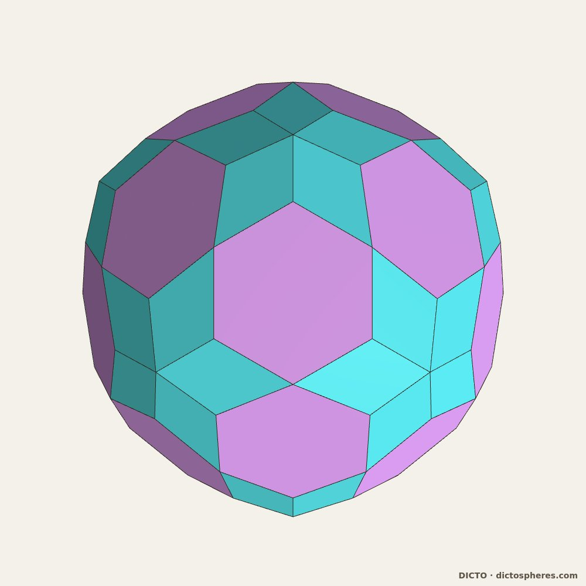

一粒沙中见世界，
威廉·布莱克《天真的预言》
本作品的论文、应用程序与数据均可自由使用；每一项都开放获取，采用CC BY-SA 4.0许可协议，可自由阅读、分享并在其基础上进行创作。
空间的量子
宣言
DICTO的几何作品
DICTO
艺术家，日本大阪 · contact@dictospheres.com · https://dictospheres.com
书籍 · 第 I 卷（中文译本）· 第 1 版 · 2026年11月7日 · DICTO DOI：10.5281/zenodo.24030227 · 原著（英文，第 2.1 版）：10.5281/zenodo.23754454
第 II 卷：《DICTO原子辞典——空间的量子 II》，收录全部原子的目录、逐部作品的数据，以及已知形体与再发现形体（DICTO DOI: 10.5281/zenodo.23966395）。
目录
本作品所包含的内容
原子 单个立体，每个都是一块精确的新块体。
#18 DICTO赫克萨#19 AXE、CLEO与FUJI#20 FUJI家族#28 DICTO截角二十面体型一百零二面体#31 DICTO八十面体#31a DICTO OCD星形体#34a DICTO一百零二·八十面体#35a DICTO间六十面体#35b DICTO复三十面体#41 DICTO宝石#45 勒洛柏拉图立体#49 多面体拉伸定理#88 每个柏拉图立体恰有两种黄金截切— 全部原子——目录见第 II 卷
键 块体如何共同填充空间：精确的套件、堆积与晶格。
#8 欧几里得-开普勒-帕乔利单元（EKP单元）#13 DICTO十二面体-13#14 DICTO星#17 笼目凸包#25 DICTO类球体-13 RD#26 DICTO ATOM-13×13#30 斐波那契脊柱#36 黄金菩提烧绿石#37 八隅桁架上的DICTO八十面体#37a 旋转八隅结构上的DICTO八十面体#40 一切堆垛上的DICTO OG家族#42 DICTO日星#44 亚里士多德的棱锥#47 柏拉图立体的任意混合都能填充空间#48 黄金剖分——二十面体、未生体与AXE成为两种凸空间填充体#51 提洛键——开普勒的菱形十二面体与立方体之间的参孙、大利拉与八隅结构#50 每块一步——精确构造的经典剪拼空间填充体#89 安德烈尼填充中的黄金截切— 结语一节——DICTONIC立体与DICTONIC键#52 键网——DICTONIC键如何交接#53 全局键网#55 大卫与歌利亚#56 孙参与拉大利#77 面对面——亚里士多德棱锥的新定律#59 二十面斧赫克萨——花、蕾、籽
壳层 块体围绕核心闭合成嵌套的壳层，每一层都被精确填满。
#22 业之链#23 法之球#24 菩提子#27 捕捉中间之物#29 泰阿泰德#34 始祖#35 金刚乘
循环 把一个壳层变为下一个壳层并回到起点的规则，有终或无终。
#32 翻转的壳层——内外翻转的法之球#33 双重视界——同一空间中的两个循环#38 通用PiTet——DICTO PiTet命题#38a DICTO开普勒-庞索-UP循环#39 DICTO OG家族——上行四步，下行四步#43 DICTO求心道核心#54 一圈即一磬折形#78 截角二十面体星（TI星）
堆垛 由块体的一个有限目录构成的一切密堆积，以及构建它的两种瓦片（全文见《HexOct——六方性定律》）。
#57 对半规则#58 从八隅结构到一切堆垛——键网#60 DICTO雅努斯 c/h 烧绿石#61 互换规则#64 晶体中的互换规则#66 焦点#67 随机堆垛与堆垛层错#69 斐波那契堆垛#68 真实多型体与六方性定律#70 真实材料 II——熵与压力#71 真实材料 III——合金与氢#72 真实材料 IV——氧化物#73 真实材料 V——冰、金刚石与纳米线#74 一切堆垛上的自旋冰与笼目磁体#75 适用于一切堆垛的两种瓦片——HexOct
四维 通过影与截面观看白王后与红王后（全文见《奇境中的艾丽西亚——红王后与白王后》），以及截面中的黄金截切。
#62 第四维的影#63 白王后——正六百胞体#76 两位王后之间#65 红王后——正一百二十胞体#89 全部五对黄金对都是四维立体的截面
发现与应用程序
— DICTO的Kaleidohedra— DICTO立体——精确几何（数据集）— 本作品中的已知形体与再发现形体——见第 II 卷
顺序与章节依照《DICTO几何作品集》（DICTO DOI: 10.5281/zenodo.23345699），并增加了“堆垛”与“四维”两章。#52及其后的作品只作简述；《HexOct》《黄金循环》与《奇境中的艾丽西亚》三本书收录其全文。
本作品所包含的内容
空间由块体构成。
每一块体都必须精确：是一个你能制作并拿在手中的形体，直至最后一个顶点都经过核验。
一小套就够了：寥寥几种形体就能构建无穷无尽的壳层与空间。
黄金比决定壳层何时闭合。
块体以键相连，而键网与块体同样真实。
重复的秩序与永不重复的秩序在块体中相遇。
一切都是开放的：应用程序、数据与论文，均可自由使用并在其基础上进行创作。
DICTO
引言
空间的量子
空间是否像水一样，一直到最细微处都是连续光滑的？抑或它是由块体构成的，正如一堵墙由石块砌成？人们问这个问题已有两千五百年。本书按字面意义对待这个问题。它寻找精确的立体块体组合，这些块体彼此拼合、不留空隙，构成壳层、构成循环，并充满整个空间。
下文是一个思想的家谱，而不是关于物理学的主张。本书中的块体是你可以制作并拿在手中的形体。它们与古代思想家和现代科学共有一个问题：空间最小的块体是什么，它们如何结合？
原子与原子之间的虚空
在古希腊，留基伯和德谟克利特教导说，世界由不可切分的微小块体——原子——构成，它们在虚空中运动。原子之间的区别仅在于形状、排列和位置。罗马诗人卢克莱修把这一学说写成诗句：“除了原子与虚空，没有任何东西自在存在”。可见原子是块体。但没有人说过它们是什么形状。
柏拉图的一套块体
柏拉图赋予了它们形状。在他的对话《蒂迈欧篇》中，四元素是四种正立体。火是正四面体，气是正八面体，水是正二十面体，土是立方体。它们所有的面都只由两种直角三角形构成。第五种正立体，正十二面体，被用于“整体”。这是第一套构建物质的套件：一小组精确的块体，万物都由它们拼合而成。
亚里士多德的棱锥
亚里士多德回应说，如果原子是实心的，它们就必须不留空隙地填充空间。他写道（《论天》III.8），在立体中有两种能做到这一点：棱锥和立方体。他没有说是哪一种棱锥。他的注释者认为那是正四面体——而正四面体单独使用时会留下一个小空隙——并为此争论了好几个世纪。照他所写的来读，他是对的：许多棱锥都能填充空间。我们的论文#44《亚里士多德的棱锥》证明了从柏拉图立体的中心切出的哪些棱锥能做到这一点。升高一维，就连正四面体也能闭合：正六百胞体的每个顶点周围有二十个（#63）。而#65《红王后——正一百二十胞体》证明，他的全部五种棱锥都是四维正立体的核心，并且恰好具有他的比例。
开普勒的堆积
1596年，约翰内斯·开普勒把五种正立体嵌套在各行星的球层之间。1611年，在一本论六角雪花的小书中，他用相等的小单元如何堆积在一起来解释雪花。这成为了一个著名的问题：相等的球最紧能堆到什么程度。我们的论文#8《欧几里得-开普勒-帕乔利单元》发现，全部五种正立体嵌套在一个重复单元的13个点上。
现代科学中的量子
1900年，马克斯·普朗克发现能量以微小的固定份额——量子——出现。在一种现代引力理论，即圈量子引力中，空间本身也是如此。1995年，卡洛·罗韦利和李·斯莫林证明，在这一理论中，面积和体积以分立的台阶出现，而不是连续变化。2011年，欧金尼奥·比安基、彼得罗·多纳和西莫内·斯佩齐亚莱证明，每一小份体积都可以理解为一个具有平面的小立体，由其各面的大小和方向确定。空间变成由这样的立体面对面连接而成的网络。“空间的量子”这一说法本身就来自这一理论（罗韦利与乌帕迪亚，1998年）。
这里有一个必须坦白的差别。在那个理论中，两个相邻的块体共有一个面积相同的面，但一般而言形状并不相同（弗赖德尔与斯佩齐亚莱，2010年）。它们的块体不必拼合。我们的块体总是精确拼合，顶点对顶点。其他途径，例如因果集，则是用点而不是用立体来构建空间和时间。
因此，本书不对物理学作任何主张。它共享的是问题和形式：空间可以由哪些最小的精确块体构建，它们又如何结合？
中心——一切密堆积的量子
把橙子堆在箱子里，每一新层都坐在下一层的凹窝中，方式有两种。一直重复其中一种选择，堆就是立方的；一直重复另一种，堆就是六方的；以任意顺序混合它们，它仍然是完美的堆积。自然界在金属、冰、碳化硅和电池的氧化物中使用了许多这样的混合。
DICTO的对半规则（Rule of Halves，#57）表明，无论各层如何堆垛，无论周期与否，球与球之间的空间都被分成仅有有限多种的块体，每一种都是从两种纯堆垛中整块或半块借用的。这是对现存的每一种密堆积都适用的一个有限的量子目录：这是本作品对那个古老问题给出的最清楚的回答。在立方层与六方层相遇之处，一个块体一半属于一方、一半属于另一方：雅努斯 c/h 块体站在两种秩序之间的门槛上。块体只通过互换而改变（互换规则，#61），因此每一个计数和每一个体积都是一个数——六方层所占的比例——的直线函数（六方性定律，#66），而真实晶体遵从这一点（#67–#74）。而这个目录最终收拢为仅仅两种瓦片，一种立方、一种六方，它们能以任意顺序构建每一种堆垛：HexOct（#75）。定律给出了块体；块体证明了定律。
六章
这样来读，这些作品分为六章。
原子 是单个立体，每一个都是一个精确的新块体：DICTO八十面体（DICTO Ogdoecontahedron，OG）、一百零二面体（Hecatodihedron）、宝石（Jewel）、赫克萨（Hexa）、AXE、CLEO与FUJI、勒洛柏拉图立体（Reuleaux Platonic solids），以及六种DICTONIC立体（二十面斧（Icosaxes）、未生斧（Unborn Axes）、莲花宝石斧（Lotus Jewel Axes）、十二面斧（Dodecaxes）、参孙（Samson）与大利拉（Delilah））。它们的精确形状汇集在数据集《DICTO立体——精确几何》中，其中每个DICTO立体都有一个永久的D编号。全部原子的目录——DICTO的132种新形体以及本作品用以构建的已知形体——是第 II 卷《DICTO原子辞典——空间的量子 II》。
键 讲的是块体如何共同填充空间：精确的套件、堆积和晶格，从欧几里得-开普勒-帕乔利单元到一切堆垛上的OG。最清楚的例子是三种DICTONIC键（黄金键、带钥键与提洛键）：共同填充空间的立体对。一个DICTONIC键就是这样的一对；“键”这一章则收录块体结合的一切方式。
壳层 是块体围绕一个核心闭合成的嵌套层，像洋葱的层层皮，每一层都被精确填满：业之链（Chain of Karma）、法之球（Spheres of Dharma）、菩提子（Bodhi Seed）和泰阿泰德（Theaetetus）。
循环 是把一个壳层变成下一个壳层、并且绕回原处的规则，有终止或无终止：通用PiTet（Universal PiTet）、OG家族的各步、求心道核心（Kyushindo Cores），以及内外翻转的壳层。壳层与循环在《黄金循环》一书中完整讲述。
堆垛 就是上面所说的中心：对半规则、互换规则、真实材料中的六方性定律，以及两种HexOct瓦片，在《HexOct——六方性定律》一书中完整讲述。
四维 通过其影和截面来观看：正六百胞体和正一百二十胞体，DICTO把它们命名为白王后（White Queen）和红王后（Red Queen），在《奇境中的艾丽西亚——红王后与白王后》一书中完整讲述。
在重复与永不重复之间
有些图案是重复的，像浴室地板的瓷砖。另一些永不重复，却完全有序，像彭罗斯密铺。本书中的作品用同样的块体构建这两者。
在历史的大部分时间里，物质中的秩序意味着重复。晶体是一个小晶胞无穷无尽地复制，而五重对称被认为在其中是不可能的。然后在1982年，丹·谢赫特曼发现了一种金属合金，其散射图样显示出清晰的五重对称。这些有序却永不重复的准晶体使他获得了2011年的诺贝尔奖。物质有两种秩序，而问题变成了它们如何相遇。
本书中的块体正处在这条边界上。一套精确的套件既能构建重复的八隅结构，也能构建一种按斐波那契模式永不重复的晶体（#40《一切堆垛上的DICTO OG家族》）。在《斐波那契脊柱》（#30）中，OG的五种重复堆积围绕一条五重轴相遇。沿这条轴必须移除的那些拷贝恰好构成斐波那契链，即最简单的永不重复的秩序。法之球（#23）的黄金壳层只是通过在每一圈都按同一个黄金因子变大来重复。在斐波那契堆垛（#69）中，每一种密堆积的块体都呈黄金比例，而两种HexOct瓦片按照铺放的顺序，同样能构建重复的与永不重复的堆垛。一套套件，两种秩序：块体本身就是桥梁。
块体所揭示的
有四件事一再出现。一小套就够了：少数几种精确形状就能无限地构建壳层与空间，而对于密堆积，这套套件是有限而完备的，最终只需两种瓦片。黄金比出现在五重对称出现的每一处，并决定壳层何时闭合。它还给每个柏拉图立体恰好两种黄金截切，而同样的黄金深度又作为四维立体的截面重新出现（#88、#89）。这些块体把物质中的两种秩序——重复的与永不重复的——连接起来。而同样的块体还延伸到我们的空间之外：亚里士多德所争论的五种棱锥是四维正立体的核心。
古人猜测空间是由有形状的块体构成的，而现代物理学又回到了这一想法。这些作品精确地构建并检验这样的块体，而本书背后的每一篇论文都经过精确核验。
引言的资料来源：Plato, Timaeus (tr. B. Jowett)；Lucretius, On the Nature of Things (tr. W. E. Leonard)；Aristotle, On the Heavens III.8 (tr. J. L. Stocks)；J. Kepler, Mysterium Cosmographicum (1596) 与 Strena seu de nive sexangula
第1章 · 原子 · #18
DICTO赫克萨
由八个宝石构成的立方体、它的伙伴赫克萨钥（Hexa-Key），以及一个填充空间的棋盘格
若你把它拿在手中
你会拿着一个立方体，它的各面上有24个低矮的屋顶，向外突出。用论文的话说，它看起来“美丽而结实，像是用木头雕出来的”。它的表面显示出24个菱形窗口，每个都是彭罗斯密铺中的粗菱形。
它由八个DICTO宝石构成，安放在一个二乘二乘二的块上，并在内部相互穿插。作为一个立体，它的体积相当于六又三分之二个宝石。
图18. DICTO赫克萨：八个DICTO赫克萨宝石（2 × 2 × 2 块上的精确DICTO宝石），无剪切。取自论文的图1。
起源
DICTO宝石来自欧几里得-开普勒-帕乔利单元（#8）。取该单元的正十二面体，它是一个装有欧几里得六个屋顶的立方体。挖去它六个相邻单元中星形的星形八面体。剩下的部分保留了整个立方体和每个屋顶的三分之二，其表面显示出十二个彭罗斯菱形，立方体的每条棱上一个：这就是窗口。宝石与星形八面体像棋盘的黑格与白格那样排布，共同填充空间。
我们在Kaleidohedra应用程序的Studies世界中看到了由八个宝石构成的立方体，其体积约为八个宝石。
我们的发现
无论怎样剪切，都无法使八个分离的宝石面对面地相接成一个立方体。赫克萨只能作为八个相互重叠的精确宝石而存在。压扁宝石本身会失去窗口，所以没有采用这一做法。
赫克萨彼此之间只以窗口对窗口相接，每个相邻者两个完整的窗口。在面心立方模式中，每个赫克萨有12个相邻者。它们之间剩下的空间是一个单一的立体，DICTO把它命名为赫克萨钥 ：八个星形八面体和十二个双屋顶。于是赫克萨与赫克萨钥像棋盘格那样填充空间，体积比为五比三，正如低一级的宝石与星形八面体那样。这里有一个令人愉悦的对称：赫克萨是八个立方体加上向外翻出的24个屋顶，而赫克萨钥是八个星形八面体加上向内翻入的同样24个屋顶。
赫克萨还能以两种方式整齐地拆开：拆成8个立方体和24个屋顶，或拆成4个完整的宝石和4个修剪过的宝石。八个赫克萨可以围绕一个封在其中的赫克萨钥聚成团簇，这是高一级的笼目凸包中的宝石菱面体。在金刚石网络中，赫克萨与星形八面体填充空间，不会剩下单独的宝石。而且没有什么可以转动：这些堆积中的任何接合都不能转动后仍然拼合。
新增之处
用星形八面体和正八面体填充空间是已知的，菱形十二面体内部的立方体、正八面体和星形八面体也是已知的。窗口菱形是拉尔瓦尼建筑系统（1988年的一项专利）的十种块体之一，但宝石不是：它的壁位于星形八面体的平面内，而该专利中没有星形八面体，也没有挖切。我们在网络搜索中和DICTO的参考资料库中都没有找到由挖切过的正十二面体构建的立方体，或这个八块组成的块。正如论文所说，这并不能证明其新颖性，本记录也不主张优先权。赫克萨可以在Polyhedraverse中构建，并可在Kaleidohedra的Stella–Jewel世界中观看。
数据：第 II 卷，A.18（体积、拆分、团簇以及16项核验）。
赫克萨及其名称属于DICTO。设计研究与核验与Claude（Anthropic）共同完成，使用开源库krp-core。首次发布于Kaleidohedra v2026.10.11-octet中。出自论文#18，第2版，2026年10月20日。许可协议CC BY-SA 4.0。
DICTO DOI: 10.5281/zenodo.23376320
第1章 · 原子 · #19
AXE、CLEO与FUJI
二十面体的三种间隙块体
若你把它们拿在手中
你会拿着三个小块体。AXE 形如斧头：两个正三角形以铰链相连，锋利的棱就是斧刃。CLEO 是一个细长的棱锥，以伦敦的方尖碑克娄巴特拉方尖碑命名。FUJI 是一个六棱锥，具有富士山的形状；它的颜色是紫藤花（多花紫藤）的颜色。
FUJI的底面是一个六边形，所有角都相等，但长边与短边交替出现。它的六条斜棱长度全都相同。
图19. AXE、CLEO与FUJI，取它们填满莲子时的那一个比例。取自论文的图1。
它们解决的问题
十二个球恰好紧贴着围绕一个球，它们的十二个球心是一个正二十面体的顶点。弗兰克在1952年证明，这个由十三个原子组成的团簇比普通晶体中相应的部分更稳定。但它无法在空间中延续下去：彼此围绕放置的正二十面体总会留下空隙。两个沿一条棱相接的正二十面体在这条棱的两侧各留下一个楔形的空隙。
DICTO的团簇莲子 （Lotus seed）把十二个正二十面体围绕一个小正二十面体放置，并只用三种块体填满每一个空隙。三十个AXE封闭外侧的沟槽，另外三十个封闭内侧的沟槽。二十个FUJI填满三个正二十面体相遇处的外侧角落。二十个CLEO填满小中心周围的内侧角落。结果是由113块构成的、恰好一个大的正二十面体。
我们于2026年10月5日在研究一个正十二面体问题时，首次在Polyhedraverse应用程序中以一种更简单的方式做出了它：一个正十二面体，在其12个面上各放一个缺一个帽的二十面体（J11），然后是30个AXE和20个FUJI。这是63块，也是手工搭建莲子最容易的方法。论文附有它的可打印展开图。
我们的发现
结果表明AXE和CLEO是莫塞里-萨多克瓦片中的两种。萨多克与莫塞里制作这些瓦片是为了描述真实材料中的二十面体秩序。在这里，同样的瓦片自行出现，作为由完整正二十面体构建的团簇的间隙块体。
FUJI是新的。我们证明它不能切分为与其自身同样大或更大的莫塞里-萨多克瓦片。一个证明使用德恩不变量，这是剪切与粘合都无法改变的一个量。另一个证明使用FUJI六边形底面的角。更小的瓦片能否拼成它，仍是悬而未决的问题。
这三种块体在DICTO的整个作品中反复出现。给一个小正二十面体加上20个CLEO，就得到开普勒的大星形十二面体。加上30个AXE，就得到挖空十二面体。再加上12个帽，就得到正十二面体：这就是十二面体链，从正二十面体经过两种星形立体到达它的对偶伙伴。业之链（#22）在每一个尺度上重复莲子，而AXE、CLEO和FUJI在每一步都保持完整。
新增之处
R. W. 格雷在2002年描述了由十二个正二十面体构成的笼，并指出它们勾勒出一个更大的正二十面体；他没有填充空隙。AXE和CLEO就是莫塞里-萨多克瓦片。科贾及其同事指出，仅靠这些瓦片无法使正二十面体长大超过一个黄金级。借助完整的正二十面体以及位于其角落中的FUJI，莲子走得更远，而业之链则无终止地延续下去。
数据：第 II 卷，A.19（各块体的棱与体积、角度、两种填充方式、FUJI的证明）。
莲子、63块的搭建法、UNITY、业之链、星形冠（Stella-Corona），以及名称AXE、CLEO、FUJI、莲（Hasu）、三曲腿（Triskelion）、六角三曲腿（Triskelion Hex）、内在之眼（Inner Eye）、DESHI和星币国王（King of Pentacles）属于DICTO。AXE和CLEO是莫塞里-萨多克瓦片t6和t4；DESHI排列属于R. W. 格雷。计算、核验与起草与Claude（Anthropic）共同完成。出自论文#19，第3版，2026年10月20日。许可协议CC BY-SA 4.0。
DICTO DOI: 10.5281/zenodo.23351291
第1章 · 原子 · #20
FUJI家族
截角三角形上的棱锥，以及一对新的空间填充体
若你手中拿着一块
你会拿着一个以六边形为底的棱锥。底面是一个截角三角形 ：一个三个角都被平平切去的三角形，因而长边与短边交替出现，而每个角都相同。这个棱锥的六条斜棱都相等。它的三个侧面是正三角形；另外三个较窄。
现在想象一个控制短边的滑块。把短边缩小到零，棱锥就是正四面体。让短边增长到与长边相等，棱锥就塌平成一个正六边形。在两者之间，在一个黄金设定处，就是FUJI，即莲子的间隙块体（#19）。这个滑块就是FUJI家族。
图20. 同一比例下的FUJI家族，所有侧棱相等：从正四面体经过FUJI到平的六边形。深色面：三个正三角形；浅色面：三个等腰三角形。取自论文的图2。
起源
这个形状一再出现。在设计DICTOspheres——带有14个PET瓶接口的3D打印球体——时，DICTO希望接口周围是尖角三角形，最后选定了钝化的三角形，即截角三角形，以便在每个接口周围保持均匀的边距。在给莲子上色时，他希望得到正六边形，结果发现的是同样的截角三角形。他的DeltaZip和B1NR雕塑使用圆角三角形，这是同一想法的曲线形式。于是我们提出问题：FUJI是否属于一个家族。它确实属于。
我们的发现
每种反棱柱选出一个成员。 反棱柱是夹在两个相等多边形之间的一圈三角形构成的鼓形。对每一种反棱柱，恰有一个家族成员，其底面与反棱柱的三角形平坦地相接延续。正八面体给出正四面体。正四角反棱柱给出一个“白银”成员，与白银比相关。正五角反棱柱，即正二十面体的中段，给出FUJI，与黄金比相关。
这些成员存在于许多地方。 FUJI的底面是仿照乔治·奥多姆的一个作图中的黄金六边形。达马塞诺、恩格尔和格洛策发现能填充空间的那种截角四面体，其面是另一个成员的底面。在“呼吸型”烧绿石中——这是在某些铬氧化物中发现的一种由大小正四面体构成的晶体——每个六边形都是截角三角形；在黄金设定下，每个六边形都是FUJI的底面。而当立方体和正八面体被切到相同深度时，所得立体的八个三角形属于这个家族，立方体的顶点恰好位于棱锥的尖端。
轮。 受DICTO的DeltaZip轮的启发，我们提出问题：有多少个平面轮可以相互交叉，每两个沿不同的辐条相交。答案是：至多三个正方形轮、四个六边形轮或六个十边形轮；五个八边形轮是不可能的。六个轮经由一条迂回的路线，通向一个由20个CLEO构成的球，以及从中心切成20个棱锥的正二十面体，即Cleo-Icos 。
一对新的空间填充体。 Cleo-Icos不能单独填充空间。但它恰好是黄金菱面体——一个六个面都是黄金菱形的斜盒——的锐角尖端。把这个菱面体切两刀，它就分成每个锐角尖端处的一个Cleo-Icos，以及一个中间块体，DICTO把它命名为安东尼乌斯 （Antonius），其大小是前者的四倍。黄金菱面体能填充空间，所以Cleo-Icos与安东尼乌斯以二比一的比例填充空间 ，面对面相接。正二十面体自身的块体，加上一个伙伴，就能填充空间。同样的块体还能构建菱形六十面体。我们核验了一个由2,187块构成的区域，没有空隙也没有重叠。
新增之处
这里的许多内容是已知的，并已注明出处：六边形的形状、反棱柱的角度、仿照奥多姆的黄金六边形、能填充空间的截角四面体、呼吸型烧绿石，以及Cleo-Icos本身——它是麦凯的单元四面体，也是约公元前150年许普西克勒斯所著欧几里得“第十四卷”中的棱锥之一。我们的搜索没有发现作为一个整体对象的这个家族、反棱柱规则、轮的上界，或把黄金菱面体分成Cleo-Icos与安东尼乌斯的剖分；论文报告了所搜索的内容，并不主张这些是未知的。这个家族用一个形状和一个滑块，统合了各自分别发现的事物：一个间隙块体、一个由计算机发现的空间填充体、磁性晶体中的六边形，以及一个被切过的立方体的面。
数据：第 II 卷，A.20（底角公式、反棱柱规则及其证明、成员表、轮的上界、Cleo-Icos与安东尼乌斯）。
FUJI、Cleo-Icos、安东尼乌斯、莲子、DICTOspheres、DeltaZip与B1NR雕塑、截角三角形在他的作品中一再出现这一观察，以及这些名称，属于DICTO。计算、核验与起草与Claude（Anthropic）共同完成。出自论文#20，第5版，2026年10月20日（第4版的文本）。许可协议CC BY-SA 4.0。
DICTO DOI: 10.5281/zenodo.23357896
第1章 · 原子 · #28
DICTO截角二十面体型一百零二面体
一个有102个面的立体，在搭建法之球的一个阶段时发现
若你把它拿在手中
你会拿着一个近乎圆形的立体，它有102个平面，分三种：12个正五边形、30个菱形和60个细长三角形。五边形比其余的面略低一些，像浅浅的凹窝。
它建立在截角二十面体上，在其20个六边形上各立着一个低矮的六棱锥，即盾 （Shield）。这些盾被升高到恰好这样的高度：两个相邻盾的三角形落在同一平面内，合并成一个菱形。它的棱只以两种角度折转。
图28. 一百零二面体：12个正五边形（金色）、30个菱形（青色）、60个三角形（紫藤色）。取自论文的图1。
起源
法之球（#23）让一个正二十面体一层一层地生长，经过截半二十面体、正十二面体、截角二十面体和菱形三十面体，回到一个大一个黄金级的正二十面体。在《捕捉中间之物》（Capturing the In-betweens，#27）中，这一生长过程的每个闭合阶段都被当作一个立体。第7阶段，即每个六边形上都有一个盾的截角二十面体，结果是凸的，而且面数比它的块体所暗示的要少：102个。它是在搭建时被发现的。
我们的发现
在这个特殊高度上，横跨两个六边形相接之棱的60个三角形两两配对，成为30个菱形。紧挨五边形的60个三角形仍是三角形。于是这些盾的20个尖端恰好位于一个正十二面体的顶点上。
菱形和三角形共90个面，与同一个球相切。12个五边形位于这个球内侧少许，因此这个立体没有一个与每个面都相切的球。我们早先的一篇论文说全部102个面都与同一个球相切；那是错误的，已经更正。
这个立体确切是什么：盾的尖端是一个已知立体——五角化十二面体，即截角二十面体的对偶伙伴——的顶点。因此一百零二面体是一个已知立体，即连接截角二十面体，在五边形处把它的12个五重顶点平平切去：这是一个由已知立体导出的、尚未命名的立体。它的对偶伙伴，通过内外翻转得到，是DICTO八十面体（#31）。两者互锁成一个有182个面的复合体，DICTO把它命名为DICTO一百零二·八十面体（DICTO Hecatogdoecontahedron，#34a）。
新增之处
它的面的模式接近康威的六角化截角二十面体（hexakis truncated icosahedron），后者有132个面；我们的立体是那个立体被压平、并有30对三角形合并后的形式。它不是阿基米德立体、卡塔兰立体或约翰逊多面体。我们搜索了康威记号、约翰逊多面体及其近似多面体、MathWorld、Polytope Wiki和McCooey的目录，没有发现它被命名过。这是对我们查找范围的报告，而不是主张该立体是未知的。名称属于DICTO：hecatodi- 表示它的102个面，来自希腊语的“一百零二”，如同hecatonicosachoron（正一百二十胞体）中那样；“截角二十面体型”表示它由之生长出来的立体。它可以在Polyhedraverse中打开（DICTO Transitional Shells），并可在DICTO-TIC世界中观看。
数据：第 II 卷，A.28（面、距离、角度、体积、与连接截角二十面体的精确关系、搜索情况）。
这个立体是DICTO的法之球的一个阶段，在搭建时被发现，其名称属于DICTO。计算与核验与Claude（Anthropic）共同完成。出自论文#28，第3版，2026年10月20日。许可协议CC BY-SA 4.0。
DICTO DOI: 10.5281/zenodo.23360857
第1章 · 原子 · #31
DICTO八十面体
一个有八十个面的立体，在把一组嵌套壳层内外翻转时发现
若你把它拿在手中
你会拿着一个近乎圆形的立体，它有80个平面：20个正六边形和60个筝形。无论看向哪里，筝形都簇拥在六边形周围。在12个点处，五个筝形会聚于一点，这一点只比其余部分略微凸出一点。
在手中转动它，从许多方向看它都一样。它具有正二十面体——那种有二十个面的正立体——的完全对称性。它的102个顶点几乎全都位于同一个球上：其中90个恰好在球上，只有那12个五筝形点略在球外。各面沿只有两种长度的棱相接，并且只以两种几乎相同的角度折转。每个筝形有两条长边，与六边形的边等长，以及两条较短的边。DICTO按它的八十个面为它命名：Ogdoecontahedron （八十面体），来自希腊语中表示“八十”和“面”的词。简称OG。

图31. DICTO八十面体，六边形为紫藤色，筝形为青色：(a) 斜看；(b) 正对中央的一个正六边形看；(c) 正对12个五筝形会聚的外凸点之一看。取自论文的图1。如何发现
它始于更早的一件作品《法之球》（#23）。在那里，六个立体像俄罗斯套娃一样一个套一个。每个套娃与下一个之间的空隙被几种重复的块体精确填满，而这种嵌套无终止地重复下去。在其中一层进行到一半时，它六边形上的帽闭合成一个独立的立体，即DICTO截角二十面体型一百零二面体（#28）。
2026年10月13日，DICTO构想把整个嵌套内外翻转。简单地把每一层的块体翻过来是行不通的：没有一层能闭合成壳层。行得通的是几何学中的一个古老技巧。取一个以公共中心为球心的球，把它当作镜子来用：每个平面变成一个顶点，每个顶点变成一个平面。每个立体变成它的对偶伙伴，嵌套的顺序也反转过来，于是里面翻到了外面。
我们对全部七个立体都这样做了：嵌套中的六个，加上它们之间的一百零二面体。其中六个得到的是已知的立体。有一个不是。一百零二面体变成了这个新立体，即八十面体。
我们的发现
一旦找到，OG就有一个简单的描述。取一个已知立体，五角化十二面体。找到它六个面相会的20个顶点，把每一个平平切去。每个切口留下一个正六边形，原来的面剩下的部分就是筝形。在镜子的一侧加上一个帽，就是在另一侧切去一个角：一百零二面体在其母体的每个六边形上加一个低矮的棱锥，而OG则改为切去一个角。
在反转的嵌套中，OG恰好紧贴地处于两个经典立体之间。它的六边形位于它内部的截半二十面体的面内，它的筝形位于它外围的五角化十二面体的面内。
把OG的拷贝六边形对六边形地连接起来，也是DICTO的构想。让每个拷贝通过四个指向正四面体顶点方向的六边形与另外四个拷贝相连，这些拷贝就构成一个金刚石网络。各接合处本身位于一个由共顶点的正四面体构成的模式上，即烧绿石晶格。第二个网络嵌入第一个网络的空位中，仅在六边形上与之接触。两者合起来构成一个整齐的堆积：每个拷贝朝向相同，并通过指向立方体八个顶点方向的八个六边形与八个相邻者接触。这个堆积填充了空间的77.43%。这比相等的球——像市场摊位上的橙子那样——最紧可能的堆积（填充74.05%）还要多。计算机搜索找到了一个稍密一些的规则堆积，但并未证明它是最密的。
OG把在重复图案中常见的正六边形与五重对称——准晶体的对称——连接起来。我们检验了它是否是标准二十面体准晶体的一个块体。它不是。但它可以以五种这样的方式堆积，而在这五种堆积围绕一条五重轴相遇之处，必须移除的那些拷贝，连同中间那个拷贝，在中心附近恰好构成斐波那契链。这就是《斐波那契脊柱》（A Fibonacci Spine，#30）的主题。
新增之处
这里的许多内容是古老的，并在论文中注明了出处：关于球把立体内外翻转、五角化十二面体及其切角、金刚石晶格与烧绿石晶格，以及相等球的堆积。就连OG的面的模式——哪个面与哪个面相接——也是已知的：它可以用Antiprism软件的记号写出。我们在DICTO的参考资料库中、在McCooey收录553个立体的在线目录中或在网络搜索中都没有找到的，是这个立体本身——具有这些正六边形和这些筝形——或它精确的六边形连接堆积。因此OG是一个由已知立体导出的、尚未命名的立体。它的名称属于DICTO；具有这些面的这个立体及其堆积，在所查资料中未见。
数据：第 II 卷，A.31（计数、精确棱长、角度、半径与体积；各种堆积及其密度；准晶体检验；所搜索的资料来源）。
一百零二面体、把法之球内外翻转的构想、Ogdoecontahedron（八十面体）这一名称，以及把拷贝在六边形上连接成烧绿石网络的构想，属于DICTO。计算、精确算术与渲染图与Claude（Anthropic）共同完成。出自论文#31，第4版，2026年10月20日。许可协议CC BY-SA 4.0。
DICTO DOI: 10.5281/zenodo.23404688
第1章 · 原子 · #31a
DICTO OCD星形体
八十面体的伴随体，沿其接合处切开
若你把它拿在手中
你会拿着一个多刻面的、宝石般的立体，它有48个顶点和50个面：6个六边形和24个四边形面，全部位于黄金平面内，另有20个三角形。其中八个三角形是特别的。它们是它与相邻者相接的平坦之处。
它不像周围那些二十面体对称的立体那样圆。它的切法只保留了那些立体对称性中的24个，即它们与立方体共有的那些。（几何学家称之为黄铁矿型，得名于黄铁矿的晶体。）
图31a. DICTO OCD星形体（DICTO OCD Stella）。取自论文的图1（左）。
起源
DICTO八十面体（#31）以体心立方排列堆积，每个拷贝在其六边形上与八个相邻者相连。黄金转接块嵌合在每个拷贝周围，它们合起来具有一个实心的轮廓，即OG的伴随体 。用DICTO的话说，它是“转接块坐落在OCD上的方式所带来的免费礼物”。沿八个接合处切开这个伴随体，就得到DICTO OCD星形体 。
我们的发现
它能堆积。 OCD星形体的拷贝在全部八个接合处面对面相接，填充空间的87.12%。
它能构成种子。 把十二个OCD星形体围绕一个小的OCD星形体放置，它们恰好填满一个更大的OCD星形体，这与菩提子（#24）的模式相同，尽管OCD星形体的对称性较低。
它能构成晶体。 OG的堆积分成两个金刚石网络。在OCD星形体留在第一个网络上的同时，把一个伙伴放到第二个网络上，这是DICTO的构想。以正二十面体为伙伴时，每个立体都与它的八个相邻者面对面相接。把剩余的空隙切成块体，也是DICTO的构想，而它恰好分成四种凸块体。以正八面体为伙伴——这是DICTO的下一个构想——时，每个正八面体的六个尖端嵌入OCD星形体上的凹口中，这种晶体填充空间的96.33%。只在四分之一的位置上放正八面体，如同岩盐那样，它填充空间的91.72%。
原子13（Atom 13）。 又是DICTO的构想：十二个OCD星形体围绕一个中央的OCD星形体，每个都向外推，直到它与中心接触。它们与中心平面相接，彼此之间从不接触。二十个正二十面体嵌入它们之间的空隙中。
新增之处
伴随体的面的模式是已知的（倒角二十面体），而从菱形三十面体切出、处于同类晶格上的另一种黄金空间填充体也是已知的（卡拜的54面空间填充多面体）。那种立体填满整个空间；OCD星形体是一个不同的立体，填充87.12%。由两种硬立体构成的晶体，例如正四面体与正八面体，也是已知的。我们在所查资料中没有找到OCD星形体、它的堆积、它的种子、它的晶体、间隙块体、带凹口的OCD星形体或原子13，所查资料包括DICTO参考资料库中全文搜索过的64份文本。你可以在Kaleidohedra中看到这些晶体（3D+ → OCD Stella Crystals）。
数据：第 II 卷，A.31a（该立体的精确体积与面、种子、四种晶体及其填充率、间隙块体、原子13）。
伴随体、星形体的切法、种子、名称、第二个网络上的伙伴（正二十面体与正八面体）、烧绿石排列、把空隙切成块体，以及原子13，属于DICTO；精确计算与文本与Claude（Anthropic）共同完成。出自论文#31a，第3版，2026年10月20日。许可协议CC BY-SA 4.0。
DICTO DOI: 10.5281/zenodo.23430870
第1章 · 原子 · #34a
DICTO一百零二·八十面体
两个互为对偶伙伴的立体锁合为一
若你把它拿在手中
你会拿着两个相互穿插的立体，就像星形的星形八面体中的两个正四面体那样。一个是DICTO一百零二面体（#28），有102个面。另一个是DICTO八十面体（#31），有80个面。每一个的顶点都从另一个的面中穿出。
它们合起来有182个面和182个顶点。DICTO把两个名称合并来命名这一对：Hecatogdoecontahedron （一百零二·八十面体），即102与80合在一起。
图34a. DICTO一百零二·八十面体：一百零二面体（金色）与八十面体（蓝绿色）互锁，并显示截角二十面体以及公共核心与凸包。由精确顶点绘制。取自论文的图1。
我们的发现
这两个立体互为对偶伙伴：把其中一个关于一个球内外翻转，就得到另一个。这里的球是与截角二十面体每条棱的中点相切的那个球。在这个大小下，两个立体恰好互锁。八十面体位于该球上的90个顶点恰好位于截角二十面体的90个棱中点上。两个立体中任何一个的顶点都不位于另一个的内部。
由于两者互为对偶伙伴，这一对就是它自身的对偶：内外翻转后，这个复合体交换它的两个立体，而保持不变。
两个立体共有的部分，即它们的公共核心，是截半截角二十面体。把两者都包住的轮廓，即凸包，是连接截角二十面体，也称为菱形九十面体。这些恰好是一个经典对偶对——截角二十面体及其对偶伙伴五角化十二面体——的核心与凸包。因此这个新的对以一种新的方式分配了一个经典复合体的空间。这就像正八面体和立方体，它们是星形八面体的核心与凸包。
在《始祖》（Progenitors，#34）中，这个核心和凸包成为一个黄金循环的站点，因此该循环容纳了两个对偶复合体的核心与凸包：经典的正二十面体与正十二面体复合体，以及这一个。
新增之处
一个立体与其对偶伙伴的复合体是已知的。经典的截角二十面体-五角化十二面体复合体、截半截角二十面体和菱形九十面体也都是已知的。我们只主张这种配对和名称，而不主张核心或凸包。这两个立体的复合体在所查资料中未见，而这个名称在搜索中没有结果。它可以在Kaleidohedra中观看（3D+ → Vajrayana，以及 「Multi-shell chains」）。
数据：第 II 卷，A.34a（两个立体的计数、复合体、它的核心与凸包）。
这种配对与名称属于DICTO；精确计算与文本与Claude（Anthropic）共同完成。该复合体首次描述于一百零二面体论文（#28）的第2版中。出自论文#34a，第2版，2026年10月20日。许可协议CC BY-SA 4.0。
DICTO DOI: 10.5281/zenodo.23430868
第1章 · 原子 · #35a
DICTO间六十面体
黄金循环最后一个空隙中的立体
若你把它拿在手中
你会拿着一个由60个全等三角形构成的立体，在五个三角形相会的12处略尖，在三个三角形相会的20处较钝。它有32个顶点和90条棱。一个球可以放在它里面，同时与全部60个面相切。
它是用一层皮同时包住两个经典立体而制成的：一个正二十面体，以及一个顶点位于该正二十面体各面上方的正十二面体。正十二面体的大小决定了形状。DICTO的立体是这一范围内的一个确切大小。它的名称（Metaxyhexecontahedron）意为“有六十个面的中间立体”，来自希腊语metaxý ，即“在……之间”。
图35a. DICTO间六十面体。由精确顶点绘制。取自论文的图1（左）。
起源
法之球（#23）把二十面体对称的壳层嵌套在一个以黄金级重复的循环中。《始祖》（#34）把DICTO八十面体放了进去，而《金刚乘》（Vajrayana，#35）处理了它那些松散的步骤。在其中一步，即从菱形三十面体到下一个正二十面体，菱形三十面体只走到了一部分。DICTO构想应当有另一个立体恰好放在那里。所检验的其他凸的二十面体对称立体中，没有一个同时与两侧相接。这一个做到了。
我们的发现
间六十面体恰好填合这个空隙。它的12个五重顶点就是菱形三十面体自己的顶点，它的20个三重顶点恰好位于下一个正二十面体各面的中心。它与两侧都相接。
更妙的是，它所形成的两层中的每一层都由单一一种块体填满：在菱形三十面体与新立体之间是30个全等的块体，在新立体与下一个正二十面体之间是60个全等的块体。它的对偶伙伴，通过内外翻转得到，闭合了循环的内外翻转版本中相应的一步。
它属于一个家族：在这一位置上包住一个正十二面体和一个正二十面体的所有皮，随着正十二面体增大而变化。这个家族包含卡塔兰立体五角化十二面体、DICTO复三十面体（DICTO Palintriacontahedron，#35b）和DICTO间六十面体。有一个奇特之处，此处只作记录而不加解释：定义它的尺寸比恰好也是《始祖》中最紧的循环每一圈的增益。
新增之处
这个家族是已知的：Polytope Wiki给出了它的范围，MathWorld和McCooey给出了卡塔兰立体那个成员。在所查资料中未见的是：作为一个被命名或被特别区分出来的立体的这一成员，或作为被特别区分出来的它的尺寸比。它的数值不与OEIS中的任何数列相符，而这个名称在搜索中没有结果。它可以在Kaleidohedra中观看（3D+ → Vajrayana）。
数据：第 II 卷，A.35a（闭合形式、棱、半径、内切球、体积、循环的这一步）。
应有另一个立体恰好放在循环最后一个空隙中的构想，以及名称，属于DICTO；精确计算与文本与Claude（Anthropic）共同完成。出自论文#35a，第3版，2026年10月20日。许可协议CC BY-SA 4.0。
DICTO DOI: 10.5281/zenodo.23430864
第1章 · 原子 · #35b
DICTO复三十面体
内外翻转的菱形三十面体
若你把它拿在手中
你会拿着一个由60个三角形构成的立体，它有32个顶点：12个是五个三角形相会处，20个是三个三角形相会处。每个三角形恰好是开普勒菱形十二面体的一个菱形的一半。
它的名称来自希腊语pálin ，意为“回返”，说明了它是什么：翻转回自身的菱形三十面体。它指向与菱形三十面体相同的32个方向，但在那个立体的顶点伸得远的地方，这个立体的顶点靠得近，反之亦然。
图35b. 截半二十面体星（其中心棱锥以完整高度向外翻出），位于其凸包——DICTO复三十面体——之内，以及与下一个正二十面体互锁的复三十面体。由精确顶点绘制。取自论文的图1。
起源
在《金刚乘》（#35）的十二站黄金循环中，截半二十面体是循环的两个始祖相遇的壳层。一个截半二十面体可以从其中心切成32个棱锥，每个面上方一个。DICTO把这些棱锥以完整高度向外翻出，而不是把它们缩短。用他的话说：“缩短感觉像是作弊；还需要另一个立体”。包住这32个尖端的皮就是复三十面体。
我们的发现
它是内外翻转的菱形三十面体：同样的32条轴，其两种顶点距离之比被颠倒过来。它也是与间六十面体（#35a）同一家族的成员：包住一个正十二面体和一个正二十面体的皮。它在该家族中的位置介于卡塔兰立体五角化十二面体与间六十面体之间。
它跨越了循环。由计算机测量，它位于下一圈的正十二面体之内，并且几乎全部——99.46%——位于下一个正二十面体的Cleo星（Cleo star）之内。因此它把黄金循环的一圈与下一圈连接起来。一个数值上的小巧合：正二十面体的第一次星形化把其尖端放在了定义这个立体的同一个比值上。
新增之处
这个家族及其范围是已知的（Polytope Wiki），菱形三十面体和截半二十面体的中心棱锥也是已知的。在所查资料中未见的是：作为一个被命名或被特别区分出来的立体的这一成员，或作为被特别区分出来的它的尺寸比。这个名称在搜索中没有结果。
数据：第 II 卷，A.35b（闭合形式、面角、棱、半径、内切球与体积）。
把截半二十面体自身的中心棱锥以完整高度向外翻出，以及名称，属于DICTO；精确计算与文本与Claude（Anthropic）共同完成。出自论文#35b，第2版，2026年10月20日。许可协议CC BY-SA 4.0。
DICTO DOI: 10.5281/zenodo.23430866
第1章 · 原子 · #41
DICTO宝石
被相邻者的星形挖切的欧几里得正十二面体
若你把它拿在手中
你会拿着一颗有60个面的切割宝石：十二个菱形窗口和48个小三角形。每个窗口都是一个彭罗斯粗菱形，即彭罗斯那著名的永不重复图案的两种瓦片中较胖的一种，其角为108°和72°。在它六个侧面的每一个上都有一个小凹窝。
它的内部是一个立方体。窗口横跨立方体的十二条棱，而三角形是它被挖切处的壁。
图41. DICTO宝石。取自论文的封面图。
如何构成
欧几里得通过在立方体的每个面上放一个屋顶来构建正十二面体。现在把立方体并排放置以填充空间，就像三维的棋盘。把欧几里得的正十二面体放在白色立方体上。在黑色立方体上放由两个互锁的正四面体构成的星形，即开普勒的星形八面体。正十二面体的每个屋顶都伸入一个黑色立方体，而那里的星形把它挖去一部分。剩下的就是DICTO宝石 ：立方体及其六个被挖切过的屋顶。
我们的发现
宝石与星形八面体填充空间。 白色立方体上的宝石与黑色立方体上的星形八面体按体积三比一精确填充空间，呈食盐的模式。这一点最初是通过取样点来核验的；在这里得到了精确证明。每个黑色立方体恰好是它的星形八面体加上被相邻者推入其中的六个被挖切过的屋顶。
作为立体命名的团簇。 DICTO的宝石团簇成为单个立体，并有他所取的名称。宝石-四面 （Jewel-Tetra）是四个两两窗口对窗口相接的宝石。宝石-八面 （Jewel-Octa）是围绕一个黑色立方体的六个宝石，那个立方体的星形八面体封在它们之间的空洞中，恰好将其填满。宝石-菱形 （Jewel-Rhombi）是位于一个斜盒各顶点上的八个宝石，同样有一个星形八面体封在里面。
它们如何填充空间。 宝石只占空间的四分之三，因此单靠任何一组宝石都无法填满空间：必须有星形八面体同时出现。这三种团簇中的每一种都能以自身的拷贝加上松散的星形八面体来填充空间，而我们找到了这样做的每一种规则方式。宝石-四面和宝石-八面合在一起，恰好位于八隅桁架中正四面体和正八面体所在的位置，不过是作为相互重叠的立体，而不是作为一种密铺。
赫克萨，得到证明。 论文#18中的DICTO赫克萨和赫克萨钥，以及它们五比三的填充，在这里得到了精确证明。同样的模式在高一级重复：加上屋顶的立方体是一个宝石，去掉屋顶则是一个星形八面体；由八个组成的块加上屋顶是一个赫克萨，去掉屋顶则是一个赫克萨钥。
孪晶。 作为单个立体，宝石像DICTO八十面体那样形成孪晶。它的堆积不会跨越一个倾斜的镜面形成孪晶，论文给出了简单的原因：那个镜面不保持立方体网格。
新增之处
各部分是经典的：加屋顶的立方体属于欧几里得，星形八面体属于开普勒，粗菱形属于彭罗斯，排列方式是食盐的排列。宝石本身、它的晶格和这些团簇最初由DICTO发表在Kaleidohedra应用程序和《笼目凸包》（Kagome Hulls，#17）中；赫克萨发表在#18中。这里新增的是精确证明、三种团簇立体及其面数、三者与松散星形八面体组成的每一种晶格密铺、八隅结构模式及其极限，以及堆积不形成孪晶的确切原因。拉尔瓦尼1988年的专利用棱全部位于某些二十面体对称轴上的块体构建结构；宝石只有窗口的棱满足这一点，因此它不属于该条件的范围。我们在DICTO自己的记录之外——在全文搜索过的80份资料库来源中以及在网络搜索中——都没有找到宝石、它的团簇、赫克萨或赫克萨钥。
数据：第 II 卷，A.41（体积、顶点与面、密铺的证明、团簇的计数与晶格、赫克萨的证明、孪晶）。
宝石、与之对应的星形八面体、它的名称、它的团簇（以及作为单个立体的宝石-四面、宝石-八面和宝石-菱形及其名称）、赫克萨、赫克萨钥及其名称，属于DICTO。计算、精确证明与起草与Claude（Anthropic）共同完成。出自论文#41，第1版，2026年10月20日。许可协议CC BY-SA 4.0。
DICTO DOI: 10.5281/zenodo.23496353
第1章 · 原子 · #45
勒洛柏拉图立体
柏拉图立体各顶点上的球相互重叠处形成的圆润体
若你手中拿着一块
你会拿着一个光滑圆润的体，它的曲面沿弯曲的棱相接，就像一块仍然记得它所由来之立体的卵石。每个面都是一个球的球面的一部分。
奇怪的是，每个体看起来都像是它所由制成的那个立体的对偶伙伴。立方体各顶点上的球构成一个看起来像正八面体的体，而正八面体上的球构成一个看起来像立方体的体。因此DICTO按它们的外观为它们命名：勒洛八面体 （Reuleaux octahedron，立方体上的球）、勒洛立方体 （Reuleaux cube，正八面体上的球）、勒洛二十面体 （Reuleaux icosahedron，正十二面体上的球）和勒洛十二面体 （Reuleaux dodecahedron，正二十面体上的球）。
图45. 立体棱长为1时的五个体，每个体的面都用使相邻面区分开所需的最少颜色上色（金色、紫色、淡紫色、青铜色）。每个下方：球的个数及其半径，即该立体的直径。取自论文的图1。
如何构成
这是DICTO的构想。在柏拉图立体的每个顶点上放一个球，每个球恰好大到能触及最远的顶点。所有球共有的空间就是一个圆润的体。在正四面体上，这就是著名的勒洛四面体。在全部五种柏拉图立体上构建同样的体，作为一个家族，是DICTO的构想，而另外四种在我们所查的资料中没有出现。
我们的发现
主定理说明了这些体有多厚。
绝不比立体的宽度更薄。 一个在每个方向上厚度都相同的圆润体可以放入每一个这样的体中，而任何东西都不可能比它所容纳的体更薄。在两个相对的顶点之间测量，厚度恰好是该立体的宽度。
穿过一个面，精确值。 沿穿过一个面中心的直线测量，厚度恰好是一个可以写出来的数。由对称性，最外侧的点位于这条线上，而它只能延伸到最远顶点上的球所允许的程度。
对偶伙伴一致。 一个立体与它的对偶伙伴——立方体与正八面体，或正十二面体与正二十面体——给出的体，穿过各自的面测量时厚度完全相同。
正四面体遵循它自己的规则，而经典的勒洛四面体的结果是正确的：我们计算的体积与已知公式一致。尽管有这些名称，这四个新的体并不是严格数学意义上的勒洛多面体：每个顶点只位于另一个球的球面上。它们是“球多面体”。
我们相信，穿过一个面的那条线也是所有方向中最厚的方向。计算机在3,000多个方向上以十二位数字的精度与此一致，但这尚未得到证明。它作为一个猜想留待解决。
颜色。 每个体的面的相接方式与其对偶伙伴立体的面完全一样。因此使相邻面区分开所需的最少颜色数是4、2、3、3和4，正是DICTO从外观上读出的数。
新增之处
勒洛四面体及其体积是已知的，一般的球多面体、勒洛多面体以及迈斯纳立体也是已知的。资料库中关于这些体的三篇论文只使用正四面体。在全文搜索过的81份资料库来源中，我们没有找到另外四种柏拉图立体上的体或它们的宽度。关于这一主题的一篇论文，即萨利的论文，在资料库中只有一个链接，没有阅读。
数据：第 II 卷，A.45（定理、精确宽度、证明概要、五个体的表、核验）。
这一构造（在柏拉图立体的每个顶点上放一个球，半径为该立体的直径）以及按外观的命名是DICTO的构想；计算、证明与起草与Claude（Anthropic）共同完成。出自论文#45，第2版，2026年10月22日。许可协议CC BY-SA 4.0。
DICTO DOI: 10.5281/zenodo.23529499
第1章 · 原子 · #49
多面体拉伸定理
把一个立体滑动一个棱长，每条棱都保持不变
若你手中拿着一块
你会拿着一个长长的、多刻面的立体：一个被拉伸了的正十二面体。它的十二个五边形仍然都在，位于两端，而它们之间环绕着一条由十个菱形面构成的带。每条棱，无论在五边形上还是在带上，长度都相同。
从端部看，它的轮廓是一个十边形。从侧面看，它显示出一切由之开始的那个长六边形。
图49. 沿欧几里得立方体的面对角线扫掠到下一个正十二面体的正十二面体：十二个五边形（紫罗兰色）和一条由十个长面（淡紫色）构成的带。左：沿长棱看，即DICTO所看到的长六边形。中：从端部看，一个十边形。右：斜看。取自论文的图1。
起源
在论文#47中，正十二面体位于一个网格中每隔一个的立方体上。在Kaleidohedra应用程序中观察这个块时，DICTO看到了一个空隙，一个长长的六边形空间，两侧各有一个正十二面体与之重叠。为它做一个恰好嵌入的正十二面体变体，是他的构想。把这个空隙和两处重叠合在一起，就构成一个立体：一个正十二面体从两个位置中的一个滑动到另一个时所经过的空间。DICTO早先已经发现了这个家族的第一个成员，同样来自相互重叠的正十二面体：拉伸十二面体，作为发现 F11 发表。
我们的发现
定理。 取任何一个所有棱都等长的立体，例如正十二面体。沿一条直线把它滑动一个棱长，方向任意，只是不能沿它自己的某条棱。它扫掠出的形状的每条棱都恰好是一个棱长。理由很简短：新形状的每条棱要么是立体自身的某条棱经过移动，要么是滑动本身的一个拷贝，而两者都是一个棱长。
面会发生什么，很容易想象。两端的面保持原样。沿着滑动方向的面变长，并增加两条边。而在中间环绕着长出一条菱形带，立体轮廓上的每条棱对应一个菱形。
特殊方向。 沿正十二面体自身的某条对称轴滑动，得到最整洁的形状。穿过两个相对的五边形滑动，带上就有十个全都相同的菱形。沿面对角线的滑动保留全部十二个五边形。
等棱型与伸缩型。 DICTO把整个家族命名为DICTO拉伸立体 （DICTO stretched solids）：拉伸量为一个棱长时为等棱型，为其他任何长度时为伸缩型。面保持各自的种类；只有带在增长。
三帽与四帽。 不沿直线滑动，而是在一个三角形或一个正四面体的每个顶点上放一个正十二面体，再把它们包在一起。同样每条棱都相等，并且面中出现了正三角形。DICTO还设想过，转动一端是否可以使带变成三角形。这不可能：边缘呈锯齿形，而最好的三角形带仍然差三分之一个棱长。三帽和四帽则给出了三角形。
每一个等棱立体。 这个定理对所有柏拉图立体都成立。拉伸正四面体和正八面体，就出现了著名的形状：立方八面体、截角四面体和三种约翰逊多面体，这很好地表明拉伸是一种自然的操作。被拉伸的正二十面体构成第二个看起来是新的家族。
自己动手做。 论文附有可打印的展开图，以及一个由三部分组成、能从短形状滑动到长形状的伸缩模型。
新增之处
方法是古老的：沿一条直线滑动一个立体是一种标准构造（闵可夫斯基和），而面在这种构造下如何变化在一般情形下是已知的。哈特和皮乔托用同样的方式构建了由三角形和菱形构成的立体，其中没有五边形；而对于带状多面体，一个带的拉伸是经典的（格林鲍姆，承自费奥多罗夫）。我们没有找到沿面对角线、体对角线或五重轴扫掠的正十二面体，也没有找到三帽和四帽形式被命名或被描述过。由于这种构造很简单，它们可能以未命名的形式存在于某处；我们在这一理解下把它们作为DICTO的家族来呈现。十三种阿基米德立体的拉伸留待以后。
数据：第 II 卷，A.49（定理全文、证明、方向表与二十面体家族表、核验）。
拉伸十二面体（F11）、在正十二面体层中看到的长六边形、三帽与四帽形式以及伸缩模型是DICTO的构想；计算、证明与起草与Claude（Anthropic）共同完成。出自论文#49，第2版，2026年10月22日。许可协议CC BY-SA 4.0。
DICTO DOI: 10.5281/zenodo.23566671
第1章 · 原子 · #88
#88 每个柏拉图立体恰有两种黄金截切DICTO注意到，有一种面贯穿他近期的立体：截角三角形，即六个角都是120°、边长在两种长度之间交替的六边形。在数据集《DICTO立体》的立体中，每个具有三重对称的六边形都是截角三角形，而在三个单个立体——二十面斧、未生斧和白骑士（White Knight）——中，它的两种边恰好成黄金比 φ：这些就是DICTO-GTT立体（DICTO-GTT-Solids）。把一个柏拉图立体的每个顶点切去相同的量，使每个面都成为黄金截角多边形，则每个立体恰有两种方式，共十个立体：这就是DICTO-开普勒黄金截角（DICTO-Kepler golden truncations），即大黄金截切立体与小黄金截切立体（Greater and Lesser Golden Cut solids）。在正八面体处，它们就是DICTO的二十面斧和未生斧，即共同填充空间的那一对（#48）；其余八个在#88的核验范围内是新的，并收录在第 II 卷的目录中。二十面体对称的那一对与八面体对称的那一对，是正一百二十胞体与正二十四胞体在从中心到一个胞的距离的 1/φ² 处与 1/φ 处的截面，位于一半处的阿基米德截面的两侧。名称由DICTO所取。
DICTO DOI 10.5281/zenodo.23896439
全部原子
全部原子的目录，在1.4版之前是本章的结尾，如今已自成一书：第 II 卷《DICTO原子辞典》。它列出本作品中每一个被命名的形体，每一个都是一个空间的量子：DICTO的132种新形体及其D编号、他的37种新团簇、结构与网络，以及本作品用以构建的已知形体与再发现形体，每一个都附有其图片、数据和出处。它还收录逐部作品的数据，本卷中引用时写作“数据：第 II 卷，A.n”。
第2章 · 键 · #8
欧几里得-开普勒-帕乔利单元
全部五种柏拉图立体嵌套在一个重复单元的13个点上
若你把它拿在手中
你会拿着一个立方体，而在它里面，同时有其他各种柏拉图立体。一个小正二十面体位于中间。围绕它的是一个正八面体、开普勒星形中两个互锁的正四面体、立方体本身，而在立方体外面是一个正十二面体，它是通过在立方体的六个面上各放一个屋顶而构成的。
所有这些都只依托于每个立方体的13个点。把立方体并排堆起来，这个模式就在整个空间中重复。
图8. 一个单元：立方体（灰色）、欧几里得的正十二面体（金色）、开普勒的大星形十二面体（橙色）和正二十面体（绿色），全都位于同样的 20 + 12 个点上。取自论文的图1。
如何构成
欧几里得通过在立方体的每个面上放一个屋顶来构建正十二面体。现在把每个屋顶的屋脊穿过它所立的那个面向回折入立方体内。十二个屋脊点恰好落在立方体中央一个正二十面体的顶点上。在每个方向上重复这个立方体。于是一个单元的屋顶恰好是下一个单元的一个正二十面体顶点：相邻者的屋顶在每个立方体的中央相会。
从一个立方体内部看，六个相邻者的屋脊构成三个相互垂直、互锁的黄金矩形。这些就是帕乔利1509年的著作《神圣比例》（De divina proportione ）中的黄金矩形。名称由此而来：欧几里得代表屋顶，开普勒代表他的星形与嵌套立体，帕乔利代表那些矩形。DICTO为它命名，简称EKP。
我们的发现
一个单元精确地嵌套了全部五种柏拉图立体：正二十面体在正八面体内，正八面体在两个正四面体内，两个正四面体在立方体内，立方体在正十二面体内，而开普勒的大星形十二面体围绕着正二十面体。嵌套的每一步都是经典的；新颖之处在于整条链是一个重复单元。
相邻单元的正十二面体相互重叠。但从同样的点出发，可以选出互不重叠的立体。每隔一个单元放置的正十二面体彼此接触而从不重叠；这就是已知的正十二面体最密格堆积，在这个单元中被再次发现。而每隔一个单元放置的开普勒星形，其余单元放正二十面体，只在顶点处接触。DICTO称之为欧几里得-开普勒-帕乔利网络 （Euclid–Kepler–Pacioli network）。
新增之处
欧几里得的屋顶、立方体中的正二十面体、开普勒的星形和帕乔利的矩形都是经典的。在立方晶胞内含有二十面体形状的真实晶体是已知的，其中最接近的是某些金-镱合金，它们所含的正二十面体几乎就在EKP单元的点上，小约2%且略不规则。折入本身、13点单元和这个网络在所做的搜索中未见，论文把它们作为候选提出，而不是作为优先权主张。它可以在Kaleidohedra中探索（3D+ → EKP）。
数据：第 II 卷，A.8（棱链、对称群、覆盖、堆积密度、48项检验）。
这一构造、其命名以及该网络属于DICTO。计算与核验与Claude（Anthropic）共同完成，使用开源库krp-core。首次发布于Kaleidohedra v2026.10.11-octet中。出自论文#8，第2版，2026年10月20日。许可协议CC BY-SA 4.0。
DICTO DOI: 10.5281/zenodo.23284106
第2章 · 键 · #13
DICTO十二面体-13
十三个正十二面体合成一个立体，又重新拆开
若你把它拿在手中
你会拿着一个大而凹凸不平的立体：中间一个正十二面体，它的12个面上各有一个正十二面体。它的外表显示出72个正五边形、60条细长条和20个小三角形。内部没有任何缺失：它是一个封闭的立体。
而且它能拆开。中心保持裸露，十二个全等的单元——每个都是带有薄鳍的正十二面体——可以直接提出来。
图13. DICTO十二面体-13（DICTO Dodeca-13）：13个正十二面体（金色）、30个楔（青色）和20根针（紫色）。取自论文的图1。
起源
DICTO的团簇最初是一件展览作品，由PET瓶盖及其防盗环做成的十二个正十二面体，分层搭建：一条由六个构成的雪花形带，三个放在顶部的凹窝中，翻转过来，再放三个。他希望把这个团簇做成实心的，并且希望这个实心体搭好后还能重新拆开。
我们的发现
外围的十二个正十二面体从不重叠；它们只沿中心体的棱相互接触。但在三个正十二面体围绕一条棱相会之处，它们留下一个约十度的薄空隙。这个空隙是众所周知的。
我们证明这些空隙恰好由两种块体填满。三十个楔 （wedge），中心体的每条棱上一个，封闭那些薄槽。二十根针 （needle），每个顶点处一根，封闭三条槽相会的点。三个楔和一根针锁合成一个三臂星。连同13个正十二面体，这63个块体构成一个没有内部空隙的封闭立体。
每个楔是镜面对称的，每根针是三重对称的，因此它们能干净地分开：楔分成两半，针分成三份。这就是这个立体能拆成裸露的中心和十二个带鳍单元的原因。
仅靠平移拷贝，这个团簇的最佳堆积是体心立方。它还与DICTO星（DICTO-Star，#14）有关，后者就是这个团簇打开后的形式；而它不能通过共享顶点延续成一个重复网络。
新增之处
这个薄空隙在四维的正一百二十胞体以及阻挫几何的研究中是众所周知的，这些研究通过弯曲或扭转空间来封闭它。其他搭建者用别的黏合物连接正十二面体，或者使用更小的黄金瓦片，而这些瓦片的面无法构成这种楔。用两种精确的实心块体填满这个空隙，以及可以提出来的单元，在所做的搜索中未见。正如论文所说，这并不能证明其新颖性，论文也不主张优先权。这些块体可以在Polyhedraverse中构建。
数据：第 II 卷，A.13（各块体的形状与体积、总量、凸包、堆积、核验）。
这个团簇、它的搭建顺序、它要能拆开这一要求以及这些名称属于DICTO。设计研究与核验与Claude（Anthropic）共同完成，使用krp-core。出自论文#13，第2版，2026年10月20日。许可协议CC BY-SA 4.0。
DICTO DOI: 10.5281/zenodo.23284281
第2章 · 键 · #14
DICTO星
一个截半二十面体、12个正十二面体和20个被切过的正二十面体，精确闭合
若你把它拿在手中
你会拿着一个由33个块体构成的星状球。它的核心是一个截半二十面体。在它的12个五边形上各放着一个正十二面体，而在正十二面体之间的20个凹窝中放着20个帽，每个都是切去三个顶点的正二十面体（约翰逊多面体J63）。
每个块体都具有正多边形面，每个块体都以完整的面与相邻者相接，没有任何地方是敞开的。
图14. DICTO星：截半二十面体上的12个正十二面体（金色）和20个三侧台二十面体（青色）。取自论文的图1。
起源
DICTO星是DICTO各种搭建作品的中心：最初是实物，用PET瓶盖及其防盗环围绕一个截半二十面体搭成，然后在Polyhedraverse中，不晚于2026年10月4日。它被做成一个四维折叠的平直空间表亲：在四维中，围绕一个中央正十二面体的十二个正十二面体折拢在一起，封闭它们的空隙。在普通空间中，DICTO的构想是由被切过的正二十面体来封闭这些空隙。一次计算机搜索精确地证实了这个模式。
我们的发现
它精确闭合。在截半二十面体的每条棱周围有三个块体相会——中心体、一个正十二面体和一个被切过的正二十面体——它们的三个角加起来恰好是一个整圆周角。正十二面体在那里的面与被切过的正二十面体的一个面恰好对齐。因此每条棱和每个顶点都被封闭，没有空隙，也没有填充块体，这不同于十三个正十二面体的团簇（#13），后者需要两种填充块体。
为什么是被切过的正二十面体？用完整的正二十面体——一个已知的虚拟模型——各块体会相互重叠。J63是恰好去掉了三个重叠部分的正二十面体，正是这一点使这个星能存在于平直空间中。
它做不到的事：由于它在每条棱周围都恰好是平直的，它不能被折入四维，也不能延续成由正则块体构成的空间填充。两个星可以共有一个正十二面体，这样得到柱，但没有星的晶格能拼合。
新增之处
罗伯特·奥斯汀2014年的虚拟模型具有同样的排列，但用的是完整的正二十面体，它们相互重叠；在弯曲的双曲空间中，那个版本属于一种已知的蜂巢。使用被切过的正二十面体的闭合排列在所做的搜索中未见。它足够简单，可能在某个未被索引的地方已为人所知，本记录也不主张优先权。它也是DICTO ATOM-13×13（#26）的十三个团簇之一。
数据：第 II 卷，A.14（三个角、体积、核验）。
这个模式属于DICTO，在被搜索之前已用PET瓶盖实物搭建，并在Polyhedraverse中搭建。计算与核验与Claude（Anthropic）共同完成，使用krp-core。出自论文#14，第2版，2026年10月20日。许可协议CC BY-SA 4.0。
DICTO DOI: 10.5281/zenodo.23284213
第2章 · 键 · #17
笼目凸包
共享顶点的团簇、一条规则及其二十面体例外
若你手中拿着一块
你手中会是一个由八个DICTO宝石组成的团簇，它们置于一个斜盒子的各个顶点上，内部封着一颗星。现在设想许多这样的团簇，每个团簇都与相邻团簇共享其顶点上的宝石，使得每个顶点宝石恰好属于两个团簇，且没有一个多余。
这正是笼目网与烧绿石网的图样，其中三角形或四面体共享它们的顶点。在这里，它由实心团簇构成。
图17. 由DICTO宝石构成的菱面体凸包。取自该论文图1。
起源
两种空间填充共用同一个立方体棋盘格。在星形体-宝石晶格中，DICTO宝石位于偶数立方体上，星形八面体位于奇数立方体上。在日星晶格（Sunstar Lattice）中，正十二面体位于偶数立方体上，天狼星（Dogstar）——乔治·哈特发现的一种十二面体星形化体——位于奇数立方体上。DICTO把偶数单元组合成形如简单轮廓（即凸包）的实心团簇，并检验它们是否共享顶点。
我们的发现
有六种凸包形状在两种晶格中都成立：斜盒子（菱面体）、空心或实心的立方八面体、立方体、菱形十二面体和正八面体。在每一种中，任意两个团簇至多共享一个块体，且每个被共享的块体恰好位于两个团簇中，顶点对顶点。斜盒子给出完美的笼目网：每个块体恰好属于两个团簇，没有一个多余。
一条规则。 在全部六种凸包中都成立同一条规则：具有给定顶点数的凸包，位于一个每个团簇都有同样数目邻居的网络上。四个顶点给出金刚石网络，六个给出简单立方，八个给出体心立方，十二个给出面心立方，十四个给出带有第二近邻的体心立方。
例外。 由十三个正十二面体组成的团簇（#13）打破了这条规则。它的凸包有12个顶点，但至多只有3个团簇能与它共享顶点，而且不存在由它们构成的晶格。相邻轴上的邻居总会重叠。十二个顶点，至多三个邻居，永不成晶格：这条规则在二十面体对称与周期空间相遇之处失效。
新增之处
共享顶点的八面体与四面体在晶体中是已知的（钙钛矿、烧绿石），化学中以顶点相连的立方体网络、以及由正十二面体与天狼星构成的填充（Hart、Walser）也是已知的。由宝石和由正十二面体组成的团簇、跨越六种凸包的规则以及二十面体例外，在所做的检索中均未见。正如该论文所言，这并非新颖性的证明，也不主张优先权。全部六种凸包都可以在Kaleidohedra的 Stella–Jewel 世界与 Sunstar 世界中探索。
数据：第 II 卷，A.17（六种凸包、它们的块体、锚点与邻居、例外、核验）。
凸包、检验与团簇均为DICTO的。设计研究与核验与Claude（Anthropic）在krp-core中共同完成。首次发布于Kaleidohedra v2026.10.11-octet之中。出自论文#17，第2版，2026年10月20日。许可协议CC BY-SA 4.0。
DICTO DOI: 10.5281/zenodo.23376317
第2章 · 键 · #25
DICTO类球体-13 RD
一个由十三块组成、近乎圆形的整块，仅靠平移即可填充空间
若你把它拿在手中
你手中会是一个由十三个块体组成、近乎圆形的整块。它的中心是一个真正的菱形十二面体，即由菱形面构成、能独自填充空间的十二面立体。围绕它包着另外十二个块体，每个仍有十二个四边形面，但经过弯折和拉伸，使整块变得圆润。
外表面仍是带钥的：凸起与凹陷，与相邻的整块互锁。该整块的副本全部朝向同一方向，可以无空隙地填充空间。
图25. DICTO类球体-13 RD（DICTO Spheroid-13 RD，厚度0.15）：中心的真正菱形十二面体为金色，两种外层块体为绿色和蓝色。取自该论文图1（右）。
起源
DICTO猜想，菱形十二面体的“十三”——一个胞及其十二个邻居——能像DICTO赫克萨那样填充空间。确实如此。随后他规定了一个整块：读起来是一个圆润的整体形状，外表面仍是带钥的，中心是一个真正的菱形十二面体。
我们的发现
这个“十三”仅靠平移即可填充空间。 在副本所有可能的放置方式中，恰好有8种可行，而且它们都是同一种排列经旋转所得。它是铺满地面的七个六边形之花在三维中的近亲。
使之圆润。 保持这一密铺，我们移动了十二个外层胞的顶点（每个整块中都相同），使各整块仍然精确吻合。每个面都保持平面，每个块体都保持凸且具有最小厚度，并使整块的外表面尽可能小。中心仍是一个真正的菱形十二面体，只是更大。结果几乎与单个菱形十二面体一样圆，且远比普通的十三块整块更圆。
三种形状。 该整块有六个对称操作，因此只用三种块体形状：中心块，以及两种各有六块的外层块，每种为三块及其镜像。
孤岛。 每个整块通过其全部84个外表面与另外14个整块相接。各中心块从不相接：每个中心块都是带钥外层块网络中的一座孤岛。若把中心块取出，它们本身也能独自填充空间。因此该整块包含两种空间填充，一种在另一种之内。
文中给出四种厚度及可打印的展开图；主厚度下的整块宽约12.5 cm。
新增之处
这一整块密铺本身在编码理论中是已知的：它是该晶格的“半径为一的完备码”，由科瓦切维奇与谭（Kovačević、Tan，2018）发现，并由科瓦切维奇（2026）完整写出，其基础是辛格（Singer）1938年的差集。新的是：作为十三个菱形十二面体的整块，经圆润化并带钥地围绕一个真正的菱形十二面体，连同它的块体与展开图。检索并非穷尽。
数据：第 II 卷，A.25（密铺、四种厚度下的圆润化、块体、核验）。
菱形十二面体的“十三”能像DICTO赫克萨那样填充空间这一构想、整块圆润且带钥的特质、其中心的真正菱形十二面体、厚度的选择以及名称DICTO类球体-13 RD，均为DICTO的。计算与核验与Claude（Anthropic）共同完成。出自论文#25，第3版，2026年10月20日。许可协议CC BY-SA 4.0。
DICTO DOI: 10.5281/zenodo.23332821
第2章 · 键 · #26
DICTO ATOM-13×13
十三个“十二围一”的团簇，并列一处
若你把它们拿在手中
你手中会是十三个不同的团簇，每个都是一个中心加上围绕它的十二个，中心总是金色。其中六个是黄金型的，十二个位于正二十面体的五重轴上。七个是周期型的：在一个填充空间的蜂巢中，一个胞及其十二个邻居。
十二个等大的球可以同时接触第十三个球，但不能更多（Schütte、van der Waerden，1952），而十二个原子围绕一个原子构成液体与金属中的二十面体团簇（Frank，1952）。DICTO ATOM-13×13 把这一构想的十三种实体版本并列一处。
图26. 截角八面体13，4 + 5 + 4：自上方沿其窗口直视下去，金色中心的正方形位于正中。取自该论文图9。
这十三个
黄金型： 二十面体-13（Icosa-13，即莲子）、DESHI、十二面体-13、UNITY及其闭合形式VENUS、DICTO星和菩提子。
周期型： 菱形十二面体（及其圆润形式DICTO类球体-13 RD）、DICTO的斜菱形十二面体（DICTO skewed rhombic dodecahedron）、贝恩菱形十二面体、黄金比林斯基十二面体、正六边形伸长十二面体、分为4 + 5 + 4三层且中心可透过两个正方形窗口看到的截角八面体，以及带有其星形八面体的DICTO宝石。
我们的发现
对每个团簇，我们给出这十二个如何接触中心以及彼此接触，并给出填充其间的套件：共24套，从13块到213块，每一套都逐块核验，并可在Polyhedraverse中从中心向外搭建。
两个黄金型团簇——莲子与菩提子——精确闭合成其自身形式的一个更大副本。
每个周期型整块都仅靠平移即可填充空间，而且全部七个是以不同形状呈现的同一种密铺。以恰当的方式拉伸坐标，每个邻域都变成面心立方的邻域。因此七种形状以不同方式呈现同一种密铺：与类球体-13 RD（#25）相同的半径为一的完备码。
新增之处
十三球问题、弗兰克的团簇、麦凯的壳层、格雷的二十面体堆积、卡拜的三十面体团簇以及费奥多罗夫的空间填充立体都是已知的，完备码亦然。我们未发现以下内容的描述：这十三个团簇的并列；黄金型团簇的套件（DICTO本人的论文之外）；作为整块的截角八面体4 + 5 + 4或DICTO宝石13；或把七种周期形状解读为同一种密铺。检索并非穷尽。Kaleidohedra的 DICTO ATOM-13×13 世界展示了每一套套件。
数据：第 II 卷，A.26（接触表、24套套件及其体积、核验）。
这些团簇及其名称（莲子、DESHI、UNITY、VENUS、DICTO星、菩提子、DICTO类球体-13 RD、DICTO宝石、带两个正方形窗口的截角八面体4 + 5 + 4、块体名称、DICTO ATOM-13×13）、成员的选择以及金色中心，均为DICTO的。计算与核验与Claude（Anthropic）共同完成。出自论文#26，第3版，2026年10月20日。许可协议CC BY-SA 4.0。
DICTO DOI: 10.5281/zenodo.23333183
第2章 · 键 · #30
斐波那契脊柱
五种重复的堆积围绕一条轴相遇，一条永不重复的链随之出现
若你把它拿在手中
你手中会是一个由DICTO八十面体（即#31的OG）组成的大球，它们全部以六边形对六边形相连。沿其五重轴俯视，它分成五个切块，就像切成五份的蛋糕。每个切块都是一种完全重复的堆积，即一个“声部”。五个声部合在一起，构成DICTO所称的青蛙合唱 （frog chorus）。
沿着这条轴，在五个切块相遇之处，必须取出一些副本。它们的位置形成一条空隙之线，即一条脊柱，而这条脊柱遵循永不重复的斐波那契图样。
图30. 五个声部：在每个内接立方体上，八个副本以六边形面对面地围绕一个中心副本相连。取自该论文图2。
起源
OG的二十个六边形所指的方向恰好包含五个立方体。每个立方体给出一种重复的堆积，其中各副本在八个六边形上面对面相接。DICTO的构想是把这五种堆积放进围绕一条五重轴的五个切块中，成为一个由五个声部组成的五重合唱。这一排列就是晶体中已知的“二十面体无理孪晶”。
我们的发现
它精确成立。 在切块相遇之处，不同声部的副本会重叠，因此它们以整圈五个的方式被移除。结果经精确核验，直到半径10都没有重叠：2,756个位置，移除385个。每个副本都位于沿轴的一个“黄金高度”上。
脊柱是斐波那契的。 离轴最近的被移除副本位于同一平面内。连同被保留的中心副本，它们恰好构成典范的斐波那契链，即最简单的永不重复的秩序，它有长、短两种间隙，比为黄金比。
原因。 每当一圈五个副本离轴比某个精确距离更近时，它就与自身发生冲突。这个仅由硬度决定的距离，在沿轴高度12.81以内，挑出的副本与斐波那契规则所挑出的相同。
分岔。 在高度12.81处出现一个选择：移除一圈而保持斐波那契，或者保留它而移除一个代价更小的圈。保留它可少移除一圈，在此处以及其后三个这样的点上都是如此。因此，代价最小的移除方式在该高度之外把脊柱稀疏成另一条链；保持斐波那契则每次至少多付出一圈的代价。无论哪种方式，脊柱都仍是同一类切割投影型的永不重复的链。
这是两种秩序之间的一座桥梁。没有放入任何非周期的东西：只有同一种立体的五种重复堆积围绕一条轴相遇，以及硬质副本不得重叠这一规则。
新增之处
两个晶粒之间的边界可以是一维准晶体，这是经典结论；靠近一条倾斜直线的晶格点构成这样的链，这一事实也是经典的。我们未发现的是：沿五重交汇线的斐波那契链、由一圈与自身冲突所确定的窗口、对这种交汇的精确重叠核验，或代价最小的移除离开斐波那契窗口。若干关键论文为非开放获取；这些结果作为已知思想的一个新的精确实例呈现，不主张优先权。
数据：第 II 卷，A.30（精确窗口、临界距离、构建表、分岔）。
八十面体、其烧绿石连接网络、由五个声部组成的五重“青蛙合唱”，以及引出精确合唱、其边界、其核心形状与分岔的构想，均为DICTO的。计算、精确算术、渲染图与文献检索与Claude（Anthropic）共同完成。出自论文#30，第4版，2026年10月20日。许可协议CC BY-SA 4.0。
DICTO DOI: 10.5281/zenodo.23396361
第2章 · 键 · #36
黄金菩提烧绿石
堆积的八十面体之间的空隙，以及填满所有空隙的一个块体
若你把它拿在手中
你手中会是一个奇特的、带角的块体，即牛角OG转接块 （Bull-horns OG adaptor）：一个没有孔洞的立体，弯曲得像一对新月，被它周围的六个八十面体咬入。每个OG配三个这样的块体，就填满了OG留下的全部空间。
DICTO先在脑中看到了它，随后才把它构造出来：在每六个副本之间，空隙形成一个单元，“五根交叉的双T杆”，或者换个角度看，是双新月。
图36. DICTO的牛角OG转接块：一个块体；连同咬入它的六个副本；放入全部转接块的两种网络；单独的转接块，每个副本三个。取自该论文图7。
起源
以六边形相连的八十面体填充了77.43%的空间（#31）。本论文讨论其余部分。DICTO提出了填充它的若干方式：伙伴块、桥接块、六角肢、转接块、用他自己的块体进行的黄金填充。
我们的发现
空隙，精确地。 从每个OG的中心切分，空隙分成三类共72个块体，其体积精确相加。这是一个干净的答案，但不是黄金的：它的面中没有一个是菱形。
肢交叉处的黄金菱形。 把每个空闲六边形扫过空隙，扫到对面相应的六边形，就得到一个倾斜的六棱柱，即一条肢。肢成对交叉，在交叉处恰好有两个面是黄金菱形，即菱形三十面体的面。这就是黄金填充的种子。
黄金填充碎裂了。 每个OG的黄金包络——一个在其连接处被截切的菱形三十面体——把空间分为实体、壳层和一个黄金区域。但被每一个黄金平面切割后，黄金区域碎裂成8,027个块体，其中只有五个是菩提块体。
任何黄金填充所需之物。 黄金区域每个胞有24面小的非黄金壁，即星尖。没有任何黄金块体能覆盖它们。一个小块体可以：GBPC （黄金菩提烧绿石角块），一个低矮的三面棱锥，是DICTO的Cleo-Ico的黄金孪生。放入GBPC之后剩下的部分只有黄金壁，然而任意大小的黄金菱面体都无法面对面地填充它。是否存在其他填充尚无定论；最好的搜索填充了其中约三分之二。
一个块体填满全部。 DICTO的另一种思路：为树脂采用单一一种形状。把空隙中的每一点分给六个副本之间各孔洞中离它最近的那一个，空隙便分成全同的块体，即牛角OG转接块，每块恰好占一个副本的空隙的三分之一。OG与转接块精确地填充空间：整个堆积由两种形状构成。
DICTO把更深的一点反过来表述：一种形状一旦被覆盖，就不再是那种形状。一个自身空隙被填满的OG就是一个普通的截角八面体。在立方堆积中，二十面体型立体只有留出空间才能保持其形状。
新增之处
这些晶格、黄金菱面体与三十面体，以及真实合金中三十面体团簇的堆积都是已知的；卡拜的54面空间填充体以及其他工作在几何上与此接近。但它们都没有使用一种空隙被切分为单一转接块形状的二十面体型立体。精确的空隙填充、肢及其黄金交叉、碎裂以及牛角OG转接块，在所做的检索中均未见。可在Kaleidohedra中以 Golden Bodhi Pyrochlore Networks 进行探索。
数据：第 II 卷，A.36（空隙及其块体、包络的分割、GBPC、密铺检验、转接块的精确份额）。
八十面体的烧绿石网络、填充其空隙的构想、对DICTO自己块体的使用、名称黄金菩提烧绿石与GBPC，以及牛角OG转接块，均为DICTO的。计算、精确算术与渲染图与Claude（Anthropic）共同完成；§6中的障碍与转接块由Claude Fable发现，经DICTO同意。出自论文#36，第3版，2026年10月20日。许可协议CC BY-SA 4.0。
DICTO DOI: 10.5281/zenodo.23451210
第2章 · 键 · #37
八隅桁架上的DICTO八十面体
把OG置于八隅结构的八面体中、精确填充空间的套件
若你把它拿在手中
你手中会是一套块体，像一个三维拼图。在其中一个版本里，一个OG位于一个八面体之内，八个小小的黄金钥从中伸出；八面体之间是带有相应凹陷的四面体，分左手形与右手形两种。把足够多的块体拼在一起，它们就填满整个空间。
框架是巴克敏斯特·富勒（1961）的八隅桁架：八面体与四面体共同填充空间。
图37. 黄金钥八隅结构：带钥八面体（带有帽块的OG为金色，及其八个黄金包络之钥）与凹陷四面体的左手（绿色）和右手（青色）版本；八个四面体围绕一个八面体；网络。取自该论文图1。
起源
OG的八个连接六边形恰好位于一个正八面体的面上。因此OG自然地位于八隅桁架的八面体中。DICTO开辟了这条路线：他提出“用现有的块体做一个八隅桁架系统”，随后引导了每一步。
我们的发现
四个套件族，全部精确。
1. 黄金钥八隅结构。 OG的黄金包络（一个菱形三十面体）以一个小钥的形式伸入每个相邻的四面体。钥的顶点恰好位于八面体各棱的黄金分割点上。带钥八面体与凹陷四面体填充空间：两种形状，其中一种有左手与右手两个版本。
2. 彭罗斯核心八隅结构。 每个OG有十二颗由筝形构成的五角星。跨过每条八面体棱，两个相邻OG的星彼此相对，恰好错开一个星尖半径。DICTO的构想是，这些五瓣图样可以成为连接OG的彭罗斯棱柱：一个精确的彭罗斯粗菱形，加上两个较小的，把两颗星尖对尖地连接起来。共享的中间块包含三个彭罗斯核心。
3. 黄金包络。 DICTO的构想是朝最小的黄金套件推进。每个八面体上的黄金包络从不重叠，并精确填充55.73%的空间。其余部分是一个块体，因此包络与该块体以两种形状填充空间。正如DICTO所注意到的，这个网络甚至不需要OG。
4. 一体粘合块。 DICTO构想让粘合块的面成为OG的精确印痕：取桁架每个顶点周围的菱形十二面体，减去咬入它的OG。OG与这一种粘合块填充空间，两种形状，没有镜像对，OG保持完整。一个带钥版本把十二个全同的粘合块锁定在一个OG周围，使得没有一个能滑出。
新增之处
八隅桁架、菱形十二面体、黄金带状多面体、彭罗斯菱形和沃罗诺伊切分都是已知的；由八隅结构的四面体与八面体构成的互锁块，以及拉尔瓦尼由连接件相连的节点，是最接近的工作。在所做的检索中未见：位于八隅结构八面体中的三十面体、它们的精确填充、黄金分割钥、相对星之间的彭罗斯连接，以及带有二十面体型立体精确印痕的粘合块。
数据：第 II 卷，A.37（框架、四种套件及其精确体积与份额、套件表）。
由八十面体自身块体构建的八隅桁架、相对星之间的彭罗斯连接与共享中间块、向最小黄金套件的推进、单块与双形黄金八隅结构、带有八十面体精确印痕并以彭罗斯星为中心的粘合块、带钥粘合块、半菱形十二面体网络以及腔室，均为DICTO的构想与选择。计算、精确算术与渲染图与Claude（Anthropic）共同完成；独立的精确证明、顶点粘合块W、五角三四面体的识别以及带钥粘合块的设计由Claude Fable完成，经DICTO同意。出自论文#37，第4版（文本为第3版，2026年10月20日；第4版，2026年10月23日，更正图3）。许可协议CC BY-SA 4.0。
DICTO DOI: 10.5281/zenodo.23457016
第2章 · 键 · #37a
旋转八隅结构上的DICTO八十面体
跨越每一层的孪晶，以及适用于一切堆垛的一套套件
若你把它拿在手中
你手中会是两个在单个六边形上相接的OG，一个在另一个之上。乍看之下它们像是彼此的镜像。再看一眼：上面那个是另一个转过六分之一圈的结果。制备晶体的人称之为孪晶，而这一孪晶遵循立方晶体的尖晶石律。
以这种方式堆叠OG层，每一层都是下面一层的镜像，于是每个层界都成为孪晶界。
图37a. 左：OG（金色）及其孪晶（蓝色）位于两个共面的八面体中；它们在同一个连接六边形上相接，孪晶是OG转过60°的结果。右：旋转八隅结构三层中的OG；上下两层是中间一层的镜像。取自该论文图1。
起源
在#37中，OG位于八隅桁架的每一个八面体中。DICTO的构想是，它也可以存在于旋转八隅结构中，即同样的八面体与四面体，以每一层都是下面一层镜像的方式堆叠，如同球的六方堆垛。
我们的发现
真正的孪晶。 跨过每一层，OG在同一个连接六边形上与它的镜像相接。由于OG没有这样的镜面，镜像是一种不同的放置：精确地说，是OG转过60°。
适用于一切堆垛的一套套件。 把每个八面体切分为OG和八个帽块，四面体保持完整。没有任何块体跨越其所在胞的面，因此同一套套件可以填充八隅结构、旋转八隅结构以及介于两者之间的一切堆垛。帽块有左手与右手之分；在孪晶层上，一个左帽块与一个右帽块合成一个孪晶帽块，两个四面体合成一个双锥。
彭罗斯核心套件依然成立。 八隅结构的中间块在孪晶层上失效，但一个镜像中间块取而代之，再加上一个边界帽块和一个边界四面体，彭罗斯核心套件就能填充一切堆垛。
家族。 DICTO迈出了走向OG家族的一步。OCD星形体以同样的方式形成孪晶。黄金包络原样并不适合；但在两个相对的顶点处截平后，它成为一个独立的立体，DICTO将其命名为DICTO束带三十面体 （DICTO Belted Triacontahedron，DBT）。它从极到极填充旋转八隅结构的八面体而不重叠。截去更多顶点是他的构想：在指向八面体各面的全部八个顶点处截切，它就成为DICTO八面体截角三十面体 （DICTO Octahedrally Truncated Triacontahedron，DICTO OTT），具有OG自身的对称性，像OG一样形成孪晶，并适合一切堆垛。两种截切都不产生新的顶点。
DICTO填充组（DICTO Fill sets）。 DICTO的构想，依然是填充这些立体所留下的空间。每个立体再加上一种形状（在八隅结构中为同一形状的两种手性）就能填充空间。名称由DICTO选定。
宝石。 DICTO宝石的堆积以立方体为框架，不能跨过孪晶层延续。失效的是堆积，而不是立体：作为立体，宝石像OG一样形成孪晶。
新增之处
旋转蜂巢、其堆垛以及尖晶石孪晶律都是经典的，卡拜的黄金八隅桁架和54面空间填充体是不同的切分与堆积。在80份资料库文献或网络检索中未见：位于旋转八隅结构八面体中的二十面体型立体；OG、OCD星形体或OTT跨其面形成孪晶；两种堆垛共用的套件；边界块体；作为立体的DBT或OTT；或填充组。
数据：第 II 卷，A.37a（孪晶、套件、边界块体、DBT、OTT与填充组，精确）。
八十面体既存在于八隅结构中也存在于旋转八隅结构中这一构想、走向其家族的一步（OCD星形体、黄金包络、DICTO宝石）、束带立体、八面体截角立体、在三十面体更多顶点处截切，以及填充这些立体所留下的空间，均为DICTO的；立体与填充组的名称由他选定。计算、核验与起草与Claude（Anthropic）共同完成。出自论文#37a，第4版，2026年10月20日。许可协议CC BY-SA 4.0。
DICTO DOI: 10.5281/zenodo.23484012
第2章 · 键 · #40
一切堆垛上的DICTO OG家族
适用于各层每一种堆垛方式的一套套件，包括一种永不重复的堆垛
若你把它拿在手中
你手中会是一叠层，每层厚一个八面体，每个八面体中有一个OG。每一层可以用两种方式放在下面一层上：直接叠放，如在八隅桁架中；或作为其镜像。把前者记为 c、后者记为 h，那么任何由 c 和 h 组成的词都是一种堆垛，正如真实晶体中球层的情形。
有一种堆垛遵循斐波那契词 c h c c h c h c c h …，永不重复。OG家族精确地填充它，就像一种真实的矿物。
图40. 左边一对：斐波那契堆垛上的DICTO OTT与DBT（立体为金色，镜像孪晶为蓝色，h 面为淡红色）。右边一对：跨过一个 c 面的两个黄金包络（无重叠），以及跨过一个 h 面的两个黄金包络，其尖端在此重叠（红色）。取自该论文图1。
起源
OG存在于八隅结构（#37）和旋转八隅结构（#37a）中，DICTO为与之配套的立体家族命了名。把这个家族推广到一切堆垛是Claude的建议，由DICTO采纳；规则、多型体与斐波那契堆垛是共同的工作。
我们的发现
两条简短的规则说明了这一切为何成立。
孪晶规则。 如果一个立体从相对两侧看是相同的，并且有一个垂直于各层的三重旋转，那么它跨过一层的镜像就是同一立体转过六分之一圈。除非它也具有那一镜面，否则这就是真正的孪晶，即晶体的尖晶石律。
契合规则。 一个立体若留在自己的层内，且在该层内不与其邻居重叠，就适合一切堆垛，无论词是什么。
OG、DICTO OTT与OCD星形体位于各自的八面体之内，因此它们适合一切堆垛。DBT伸出它的八面体，但不伸出它的层，所以它也适合。未截切的黄金包络适合八隅结构，但不适合镜像层，在那里它恰好重叠了DBT所截去的两个尖端：造出DBT的截切，恰恰是一切堆垛所需要的。
每种立体所填充的空间份额不取决于堆垛。对OG，我们给出了经典多型体（即碳化硅与密堆积金属中已知的堆垛）的套件。在斐波那契堆垛上，每个晶胞中的块体数量都是黄金数，这仅由堆垛决定。这种晶体在两个方向上是周期的，在第三个方向上永不重复。
新增之处
这些堆垛、它们的记法以及尖晶石律属于经典晶体学，不作主张。这两条规则是对称性的简短推论，晶体学家很可能认得出来；我们未发现它们以这种形式被陈述过。此处主张的是：适用于蜂巢中立体的这两条规则、DBT适合一切堆垛、包络的精确失效、多型体的OG套件，以及OG的斐波那契晶体及其黄金块体数。斐波那契堆垛本身不作主张。
数据：第 II 卷，A.40（空间份额、检验、多型体套件、斐波那契计数）。
旋转八隅结构中的八十面体、立体家族及其名称均为DICTO的；把家族推广到一切堆垛由Claude提出并由DICTO采纳，规则、多型体与斐波那契堆垛是共同的工作。计算、核验与起草与Claude（Anthropic）共同完成。出自论文#40，第1版，2026年10月20日。许可协议CC BY-SA 4.0。
DICTO DOI: 10.5281/zenodo.23490114
第2章 · 键 · #42
DICTO日星
宝石的孪生：正十二面体与天狼星填充空间
若你把它拿在手中
你手中会是一个正十二面体，它的六个面上各粘着一颗尖刺状的星。每颗星都是一个天狼星 ，这是DICTO给它起的名字。十二面体与天狼星合在一起，构成一个日星 （Sunstar）。
天狼星是这样得到的：当正十二面体位于一个网格中相间的立方体上时，余下每个立方体中的孔洞就是一颗星；正十二面体与天狼星一起填充空间。
图42. DICTO日星。取自该论文的封面图。
起源
把欧几里得的十二面体——一个每个面上加一个屋顶的立方体——放在一个网格中相间的立方体上。这是正十二面体最密的规则堆积（Betke、Henk）。作为立体的天狼星以及这一填充属于乔治·哈特（1996）。DICTO的日星晶格、他的星链式反应（Star Chain Reaction）以及他的日星团簇首先随Kaleidohedra应用程序发布；本论文对它们给出精确证明。
我们的发现
天狼星，精确地。 每个天狼星都是它所在的立方体减去伸入其中的六个屋顶。作为位于其中心的一个小正十二面体的星形化体，它恰好是核心加上全部12个棱锥、30个楔中的24个以及20个尖刺中的8个。它位于其所在立方体的开普勒星之内。
星链式反应。 那个小核心的大星形十二面体恰好伸到大正十二面体的20个顶点。在它内部有一整个日星，小一个黄金因子，精确契合而没有生长的余地；在那之内又有下一个，如此永远继续。DICTO称之为星链式反应。
作为立体的团簇。 相邻的正十二面体恰好在一个彭罗斯粗菱形上相接，即DICTO宝石（#41）的窗口。DICTO的团簇成为单个立体：日星-四面 （Sunstar-Tetra，四个正十二面体）、日星-八面 （Sunstar-Octa，六个正十二面体及恰好填满其孔洞的天狼星：一个内外翻转的日星）以及日星-菱形 （Sunstar-Rhombi，八个围绕一个封闭的天狼星）。它们与散置的天狼星一起填充空间的方式，与宝石团簇恰好相同。
赫克萨孪生。 一个由八个立方体组成的方块上的八个完整正十二面体构成一个立体，即日星-赫克萨 （Sunstar-Hexa），它们之间的空间构成另一个，即日星-赫克萨钥 （Sunstar-Hexa-Key）。它们一起填充空间；但宝石的赫克萨与赫克萨钥以五比三分享空间，而这两者分享空间的比例是无理数。
孪生。 日星晶格与星形体-宝石晶格具有相同的立方体和相同的屋顶。它们的区别仅在于每个屋顶的尖端归谁所有。去掉六个尖端的正十二面体就是宝石；带上它们的天狼星就是开普勒星。因此这两个家族共享它们的窗口、团簇以及每一种密铺。
新增之处
天狼星及其密铺（Hart；Walser；Polyhedra-World）、最密堆积（Betke、Henk）、欧几里得屋顶以及开普勒星都是已知的，并已注明出处。此处主张的是：精确证明、天狼星的精确识别、精确的星链式反应及其紧密契合、作为精确彭罗斯菱形的接触面、三种团簇立体、日星-赫克萨与赫克萨钥及其无理比例，以及日星与宝石的对应关系。
数据：第 II 卷，A.42（体积、星形化单元、链、团簇、赫克萨比例）。
名称天狼星、日星、日星晶格、星链式反应、日星-四面、日星-八面、日星-菱形、日星-赫克萨与日星-赫克萨钥，以及团簇与赫克萨孪生，均为DICTO的；计算、精确证明与起草与Claude（Anthropic）共同完成。作为立体的天狼星曾由昂斯特德（Ounsted）、格林鲍姆与谢泼德（Grünbaum、Shephard）以及斯图尔特（Stewart）绘出，这是乔治·W·哈特所列举的；哈特把它列为十二面体的第8号星形化体，并指出了它与正十二面体的密铺（1996）。出自论文#42，第1版，2026年10月20日。许可协议CC BY-SA 4.0。
DICTO DOI: 10.5281/zenodo.23497702
第2章 · 键 · #44
亚里士多德的棱锥
从柏拉图立体切出的哪些棱锥能够填充空间
若你把它们拿在手中
你手中会是五个棱锥。每一个都是把一个柏拉图立体的中心与它的一个面相连而切出的：正十二面体给出十二个，正二十面体给出二十个，立方体给出六个，正四面体给出四个，正八面体给出八个。正二十面体的棱锥就是DICTO的Cleo-Icos 。
亚里士多德在《论天》中写道，在立体之中只有“棱锥和立方体”能填充空间。如果他指的是正四面体，那他就错了。DICTO推测，他可能指的是这些棱锥中的一个，即Cleo-Icos。
图44. 五个中心棱锥（金色），每个都显示在其所属立体（玻璃）之中，尖端位于立体的中心，面在底部：立方体、正四面体、正八面体、正十二面体和正二十面体（Cleo-Icos）。取自该论文图1。
我们的发现
主定理给出完整的答案。 这些棱锥中恰好有三种组合能填充空间：单独的立方体棱锥；正四面体棱锥与正八面体棱锥；以及这三种合在一起。其他组合都不能。正十二面体与正二十面体的棱锥根本不能被使用，无论以何种混合、何种位置，即使允许镜像且不要求面对面也是如此；而正四面体的棱锥被使用，当且仅当正八面体的棱锥被使用。
原因。 凡是块体沿一条棱相接之处，它们围绕该棱的角之和必须等于一整圈。正四面体、正十二面体和正二十面体那些不便的角彼此无关，因此没有一个能弥补另一个。每次只计数一个不便的角：正十二面体或正二十面体的棱锥会留下一个任何东西都无法补全的角；正四面体棱锥的角只能由正八面体棱锥的角补全，反之亦然。严格的那一步使用了康威（Conway）、雷丁（Radin）与萨顿（Sadun）关于这类角的一个定理。
而这些方式确实成立。 六个立方体棱锥组成一个立方体。经典的由正四面体与正八面体构成的八隅结构，从各自中心切分，就同时给出正四面体与正八面体的棱锥；立方体板层与八隅结构板层交替，则给出全部三种。当等棱的正四面体棱锥与正八面体棱锥填充空间时，在大区域上它们的数量相等。
黄金修正。 Cleo-Icos无法与任何中心棱锥一起填充空间；它的伙伴必须是另一类立体。DICTO的安东尼乌斯 （#20）就是其一：两个Cleo-Icos配一个安东尼乌斯构成一个黄金菱面体，而黄金菱面体能填充空间。对60°菱面体作同样的切分，给出八隅结构的正四面体、正八面体和正四面体：在两种情形中，中间的三分之一都是伙伴。
完整的立体。 完整的柏拉图立体如何填充空间，DICTO早先的工作对全部五种都给出了答案。立方体独自填充空间；正四面体与正八面体一起填充空间。正十二面体与天狼星一起填充空间（#42）：立方体上的欧几里得屋顶，正是让正十二面体能够位于立方网格上的原因。DICTO又把屋顶移到了正二十面体上：六个棱上的屋顶，即他的提督帽 （Admiral Caps），使它成为一个正八面体，而八隅结构已经为正八面体安排好了位置。用他的话说：“与十二面体和屋顶相同的原理，只是用六个”。
一场漫长的争论。 亚里士多德的这一断言被争论了两千年。一些注释者认为，十二个或二十个正四面体能围绕一点填充空间。托马斯·布拉德沃丁（Thomas Bradwardine）注意到，正二十面体从其中心可切分为二十个全等的四面体，但无法判定它们是否是正四面体。它们不是：它们就是Cleo-Icos。1529年，毛罗利科（Maurolico）指出，单独的立方体以及正四面体与正八面体一起能填充空间。我们并不声称知道亚里士多德指的是什么；若解读为中心棱锥，他的断言如今已得到精确的解决。
新增之处
按棱计数的思想，是“能密铺空间的立体其德恩不变量为零”这一事实背后的经典思想（Debrunner；Lagarias、Moews）；此处它被同时应用于几种瓦片，且每一个陈述都得到证明。一个未决问题仍然存在：除了切分后的八隅结构及其重排之外，还存在哪些由正四面体棱锥与正八面体棱锥构成的密铺。
数据：第 II 卷，A.44（各棱锥的角、证明、推论）。
亚里士多德可能指的是Cleo-Icos这一构想是DICTO的，名称Cleo-Icos、安东尼乌斯与提督帽以及§5中早先的发现也是DICTO的；计算、证明与起草与Claude（Anthropic）共同完成。出自论文#44，第2版，2026年10月22日。许可协议CC BY-SA 4.0。
DICTO DOI: 10.5281/zenodo.23529497
第2章 · 键 · #47
柏拉图立体的任意混合都能填充空间
五种立体的任意组合，加上七种辅助块体
若你把它拿在手中
你手中会是一个多层蛋糕。最底下是一层正十二面体，其间夹着星形的天狼星。其上是一层立方体。再上是一层正四面体与正八面体，即八隅结构。最上面是一层正二十面体，每个都位于一个更大的正八面体之内。把蛋糕叠起来并重复，它就填满整个空间。
这五种立体记为 D、I、C、T 和 O：正十二面体、正二十面体、立方体、正四面体、正八面体，即DICTO的字母。
图47. 全部五种立体的混合：板层自下而上叠放，分开绘出。正十二面体（紫罗兰色）、立方体（绿色）、由正四面体（红色）与正八面体（黄色）构成且其面上带有半八面体（淡金色）的八隅结构，以及大八隅结构中的正二十面体（蓝色）。为使各立体显露而略去的有：天狼星与边界块体、提督帽以及小棱锥。取自该论文图1。
起源
以任意组合连接各柏拉图立体，并以早先的工作为基础，这是DICTO的构想。五种立体共有31种可能的混合。
我们的发现
主定理。 从五种柏拉图立体中任选：一种、几种或全部，所有立体的棱长都相同。它们总能被无任何空隙地堆积在一起，只需使用一小套固定的七种辅助块体，其中大多数是从这些立体本身切出的：半八面体；两种尺寸的正四面体中心棱锥（#44）；DICTO的提督帽 ；天狼星（#42）；以及去掉或加上一个欧几里得屋顶的立方体。
证明是一个多层蛋糕。 每种立体都有自己填充空间的方式；每种都被做成一个顶面和底面平坦的层，再把所需的层叠起来。立方体自成一层。正四面体与正八面体共用八隅结构，将其截平，面上加半八面体。正二十面体恰好位于一个更大的正八面体之内（帕乔利的图形），DICTO的六个提督帽填满其余部分；这些大正八面体组成它们自己的、更大的八隅结构。正十二面体位于相间的立方体上，其间为天狼星，另有两种附加块体把平坦的边缘补齐。
谁需要辅助块体。 单独的立方体，以及正四面体与正八面体一起，都不需要。每一种含正十二面体或正二十面体的混合都需要辅助块体；单独的正四面体、单独的正八面体，以及立方体与其中任一种的组合，也都需要。五种合在一起需要七种辅助块体中的六种。一个小小的巧合：一个正二十面体的六个提督帽与一个天狼星体积相同。
DICTO的桥接。 DICTO还建议了其他桥接：类似他那些已经能连接六边形的转接块的块体、两端为不同多边形的类似盾状体（scutoid）的形体，以及带屋顶的截角四面体。平坦的层使这些对于该定理而言并非必要，但如果要求面与面精确匹配，它们就很重要。有两种经典填充与他的截角四面体构想相符：正四面体与截角四面体，以及正八面体与立方八面体，棱长全部相同。他还提出了一个不同的目标：把随机放置的立体彼此连接起来，而这无需填充空间。这是连接问题而非密铺问题，他的转接块正是为此设计的。
尚未解决的有：最小的套件；立方体、正四面体与正八面体到底是否需要辅助块体；以及当要求面与面相接时会有什么变化。
新增之处
对于一种或两种立体，答案早已知道：加布里埃利（Gabbrielli）、焦（Jiao）与托尔夸托（Torquato）证明，除立方体之外，唯一能密铺空间的柏拉图立体对是正四面体与正八面体。#44的计数论证给出了第二个证明，并且还涵盖了含正十二面体或正二十面体的三种或更多立体的混合。立方体、正四面体与正八面体能否在没有任何辅助块体的情况下一起填充空间，尚无定论。
数据：第 II 卷，A.47（套件及其体积、四个引理、全部31种混合的核验）。
以早先的工作为基础、以任意组合连接所有柏拉图立体这一构想是DICTO的，提督帽以及§5中的桥接构想也是DICTO的；计算、证明与起草与Claude（Anthropic）共同完成。出自论文#47，第2版，2026年10月22日。许可协议CC BY-SA 4.0。
DICTO DOI: 10.5281/zenodo.23551326
第2章 · 键 · #48
黄金剖分
二十面体、未生体与AXE成为两种凸空间填充体
若你把它们拿在手中
你手中会是两个光滑、敦实的立体，每个都有八个六边形和六个正方形，像泡沫中的泡孔。较大的那个里面有一整个正二十面体。较小的那个里面有一个被压扁的二十面体，DICTO称之为未生体 。他把这一对命名为二十面斧 与未生斧 。把它们堆积在一起，就能无空隙地填充空间。
图48. 黄金对。从左起：正二十面体（绿色）及其12个AXE棱锥（青色）；作为单个立体的二十面斧；未生体（橙色）及其12个AXE棱锥；作为单个立体的未生斧。每幅各按自己的比例绘制。两者都是具有完整八面体对称的截角八面体。取自该论文图1。
起源
正二十面体无法独自填充空间。把它们以棱对棱的方式置于立方网格中，会留下两种空隙：每个立方体中心的一个未生体，以及位于其间各面上的细薄AXE四面体（#19），每个立方体六个。DICTO发现了这一网络以及填充其空隙的AXE。但AXE很别扭：无论把它粘在哪里，它都会突出来。在#47之后，DICTO猜想更高的优雅是可以达到的，并设定了目标：“没有多余突起的单元块体”，由“实际上是半球形的，或介于两者之间任何位置”的切分得到。他还提出了“影形”，即以其他方式分解同一空间以找到新块体。
我们的发现
黄金剖分。 把每个AXE从一个内部点切分为四个小棱锥，并把每个小棱锥分给它所接触的块体。恰好在一个点上——沿AXE轴线的黄金点——再也没有任何东西突出。正二十面体与未生体都变成截角八面体，即开尔文泡沫胞的近亲，而这两者无空隙地填充空间。
只有黄金点。 把切分点朝一个方向稍稍移动，加厚后的二十面体就会长出一条脊；朝另一个方向移动，加厚后的未生体就会长出脊。原因很简单：在正二十面体与未生体相接之处，它们的共享面得不到棱锥，因此切分点必须恰好位于该面内。每个AXE接触四个这样的面，而它们只交于一点。
带钥的一对。 在DICTO的莲花宝石网络中，小的角块改为属于正十二面体，同样的切分给出带有八个凹陷的莲花宝石斧 ，以及带有八个钥、内含一整个正十二面体的十二面斧 。把每个钥分给这一侧或那一侧的每一种方式，都仍然填充空间。
一个家族：DICTO因子。 这个黄金对属于一个完整的家族。把空间切成边长为晶格间距一半的小立方体。每个小立方体在一个顶点上有一个晶格点，在相对的顶点上有一个立方体中心，一个横跨其长对角线的平面切分把它分给这两者。滑动这个切面，就得到一个大截角八面体和一个小截角八面体，它们在每一个位置上都一起填充空间。DICTO把这个位置称为他的因子。在一端是正八面体与立方八面体；在中间是两个开尔文胞；在黄金值处，正二十面体出现在内部。在DICTO看来，这是他所设想过的最优雅的解：一次黄金截切，两个凸块体，其中一个以一整个正二十面体为核心。
新增之处
未生体就是科贾（Koca）及其同事的伪二十面体，二十面斧与未生斧就是他们的截角八面体；AXE是一种莫塞里-萨多克瓦片。新的是这条路线：AXE的黄金截切、其唯一性、带钥的一对，以及作为空间填充体的这些块体。连同#51，它们构成三种DICTONIC键中的六种DICTONIC立体。
数据：第 II 卷，A.48（网络、切分、两种截角八面体、唯一性证明、带钥的一对）。
这些构想是DICTO的：莲花宝石网络以及填充其空隙的AXE、“影形”、没有多余突起的单元块体这一目标、“半球形的，或介于两者之间任何位置”的极向剖分，以及名称未生体、AXE、莲花宝石、二十面斧、未生斧、莲花宝石斧与十二面斧；计算、精确证明与起草与Claude（Anthropic）共同完成。出自论文#48，第1版，2026年10月23日。许可协议CC BY-SA 4.0。
DICTO DOI: 10.5281/zenodo.23596362
第2章 · 键 · #51
提洛键
开普勒的菱形十二面体与立方体之间的参孙、大利拉与八隅结构
若你把它们拿在手中
你手中会是两个体积完全相同的立体。蓝色的大利拉是一个正八面体：八个全等的三角形。金色的参孙是一个截去了四个顶点（每隔一个顶点截去一个）的立方体，截得如此之深，看上去像一个尖端被剪去的四面体。
把它们放在一起，它们就吻合：参孙的四个三角形与大利拉的面大小恰好相同。这两者的副本无空隙地填满整个空间。在这一图样的每个立方体中有八个参孙和四个大利拉，参孙们围绕一个隐藏在中心的大利拉构成一颗星。DICTO依据“提洛”（Delian）把这一对命名为参孙与大利拉。
图51. 提洛键。从左起：从两侧看的参孙（金色），一个四个相间顶点被截得很深、看上去像剪去尖端的四面体的立方体；大利拉（蓝色），一个正八面体；面对面的两者。体积相等。每幅各按自己的比例绘制。取自该论文图1。
起源
在论文#48中，在黄金点处的一次切分，把一个由正二十面体及其孔洞组成的晶格变成了两个一起填充空间的凸立体。2026年10月23日，DICTO的构想是对构成八隅结构的三种正立体——正四面体、正八面体和立方体——做同样的事。并且，当一整个形状家族出现时，他的构想是先找出它的特殊位置，然后再为它们命名。
我们的发现
正四面体与正八面体一起填充空间，每个正八面体配两个正四面体。这一经典图样就是八隅结构。这些立体中的每一个都可以看作一束锥体，从其中心到每个面各一个。在正四面体与正八面体共享一个面之处，它们的两个锥体相接，构成一个双锥，而这些双锥也填充空间。
现在用一个平行于共享面的平面把每个双锥切开，并把每一侧分给它自己的中心。沿着移动这个切面，正四面体会长大而正八面体会缩小，或者反过来。它就像一个滑块。无论切面在哪里，空间仍由两种立体填充，而且两者都保持凸，没有凹陷。
在滑块的一端，只有开普勒的菱形十二面体。
在共享面之前，块体是一个小正四面体，和一个截去了其八个三面交会顶点的菱形十二面体。
在三分之一处，就是八隅结构本身。
越过共享面之后，块体是一个正八面体，和一个截去了四个相间顶点的立方体。
在另一端，只有立方体。
滑块上有几个位置格外突出。在其中两个位置——八隅结构两侧各一个——整个填充中的每条棱都等长。在另一个位置，正四面体块体与正八面体块体各自恰好填充一半的空间。在任何位置上，都没有正六边形。
并且恰好在一个位置上，两个块体体积相同。这就是提洛键。在那里，参孙的体积恰好是八隅结构中正四面体的两倍，大利拉的体积恰好是八隅结构中正八面体的一半：她就是那个正八面体缩小后的样子。要把体积加倍，就必须把每个长度乘以二的立方根。这就是古希腊人的提洛问题，它无法用直尺和圆规解决。在这里，它同时朝两个方向发生：一个块体加倍，而另一个减半。这个位置也与DICTO早先的一个构想相合：以二的立方根把一个立体的体积加倍。
DICTONIC立体与DICTONIC键
论文#48与本论文一起给出六种立体，它们以三对的形式填充空间。DICTO把这六种称为DICTONIC立体，把这三对称为DICTONIC键：黄金键（二十面斧与未生斧）、带钥键（莲花宝石斧与十二面斧）以及提洛键（参孙与大利拉）。这六种并非作为形状全都是新的。大利拉是一个正八面体，参孙是一个截去四个顶点的立方体，其比例我们在资料中未见。每种键中新的是键本身：两个立体合在一起、造出它们的切分，以及它们作为一对填充空间的方式。对立方体尝试同类切分只会得到已知的立体，因此键的数目仍为三种。
新增之处
八隅结构由来已久，立方体、八隅结构与菱形十二面体之间的联系也是如此。诺尔（Knoll）与摩根（Morgan）把这三者联系起来，但是作为分开的步骤。一种一般方法——加权沃罗诺伊图或幂图——给出这类填充的族，而这个滑块就是其中之一。在精神上最接近的是康威、焦与托尔夸托，以及加布里埃利、焦与托尔夸托所发现的正四面体与正八面体的族；但在那里两类块体都保持为正多面体，而在这里一个块体保持为正多面体，它的伙伴则变成被截切的菱形十二面体或被截切的立方体。在我们所查的资料中，我们未发现的是：这个滑块本身——从菱形十二面体经过八隅结构到立方体——它的两个等棱成员、它的各半成员，以及提洛键。尚待解决的是：对每种键找出一个其副本单独就能填充空间的单一立体，以及参孙与大利拉的打印套件。
数据：第 II 卷，A.51（滑块及其精确体积；特殊位置；提洛键；三种DICTONIC键；关于立方体与配极的说明；核验与资料）。
这些构想是DICTO的：对正四面体、正八面体和立方体做论文#48对正二十面体所做的事；先找出特殊位置再为它们命名；以及名称参孙、大利拉、DICTONIC立体与DICTONIC键。计算、精确证明与起草与Claude（Anthropic）共同完成。出自论文#51，第1版，2026年10月24日。许可协议CC BY-SA 4.0。
DICTO DOI: 10.5281/zenodo.23606828
第2章 · 键 · #50
每块一步
精确构造的经典剪拼空间填充体
若你手中拿着一块
你手中会是一个十二面的立体，它有四个完美的正六边形、四个正方形，以及四个由两个正三角形组成的菱形：正六边形伸长十二面体。它的副本全部朝向同一方向，可以填充空间。
书中描述这一立体以及与之类似的若干其他立体，是通过如何从其他立体制作它们：从一个立体上削去一条带，在另一个立体上粘两个棱锥，把几块倾斜的砖粘在一起。Kaleidohedra应用程序则通过倾斜和拉伸一个点晶格，一步做出它们。
图50. 正六边形伸长十二面体（F5），棱长1。左：Kaleidohedra胞；正方形为蓝色，60°菱形为粉色，正六边形为金色。右：经典描述，即均匀截角八面体把其六个带之一（紫色）收缩为零（费奥多罗夫的带收缩）。两者全等。取自该论文图1。
起源
2026年10月1日，DICTO在Kaleidohedra中得到了这一立体（发现 F5），走的是与书本不同的路。由这些“完美的六边形”产生了DICTO于2026年10月22日提出的构想：该应用程序的三种操作能精确地重建那些文献只以剪切与粘合的配方给出的空间填充体，并且论文应给出每一种的精确顶点、设置和证明。
我们的发现
三种操作。 Kaleidohedra处理一个规则的点网格以及围绕每个点的一个立体。你可以倾斜网格（剪切），选出所有棱都相等的那一个立体（Cell = 1），并沿另外一个方向拉伸该立体。
五种经典立体，各对应一个设置。 贝恩菱形十二面体、正六边形伸长十二面体、经典伸长十二面体、黄金比林斯基十二面体以及60°菱面体，各自都在该应用程序操作的某一个设置下被精确地得到。每一种都通过平移填充空间，并且每一种都与其经典构造逐个顶点地是同一个立体。
三个方向。 一个菱形十二面体若要在拉伸后仍能填充空间，就恰好只能沿三个方向拉伸成伸长十二面体，而不能沿其他方向。因此伸长十二面体不是一种形状，而是每个菱形十二面体的三种拉伸。在DICTO的斜晶格上，三种中的两种给出他的两种黄金斜伸长十二面体（F7）。
比林斯基十二面体。 1960年，比林斯基发现，费奥多罗夫关于具有十二个全同菱形面的立体的列表漏掉了一种，它具有十二个黄金菱形。书中描述它的方式是从一个三十面立体上去掉两条带，或把倾斜的砖粘在一起，且未给出数目。在该应用程序中，它就是普通的面心立方晶格把一个角从60°改为36°，然后取等棱胞。等棱这一步很关键：没有它，同样的倾斜只给出开普勒菱形十二面体的一个拉伸副本，而任何倾斜或拉伸都无法把它变成比林斯基的十二面体。本研究还求出了书中略去的砖的数目：两个尖的和两个扁的黄金菱面体。
DICTO的F1，定位。 DICTO的斜菱形十二面体（F1）原来是比林斯基十二面体的一个线性像：同一个立体，经过倾斜和拉伸，但形状并不相同，它的面是60°与72°的菱形。这使得“比林斯基十二面体是F1最近的已知亲属”这一较早的说法变得精确。
最简单的情形。 把一叠立方体倾斜，直到其棱以60°相交，每个立方体就变成毛罗利科用两个正四面体和一个正八面体构成的那种菱面体。尚待解决的是：“完美点”（即每个面都是正多边形的那些设置）的目录，以及其他只以配方形式为人所知的空间填充体。
新增之处
这些操作本身并不新：费奥多罗夫在1885年就写道，剪切和拉伸把立方体变成任意平行六面体，并且他通过收缩带在这些立体之间转换。经典描述按其时代的标准是精确的，并已完全注明出处；本论文是对它们的补充，而非纠正。它所增加的是精确的数据、设置与证明。三方向定理可由已知条件直接推出，很可能为专家所知，尽管未见有人把它完整写出。
数据：第 II 卷，A.50（五种设置、面、对称性与精确体积、三方向定理、F7）。
Kaleidohedra的晶格操作能精确重建文献以剪切与粘合给出的空间填充体这一构想是DICTO的，他的斜菱形十二面体（F1）以及他得到正六边形伸长十二面体的路线（F5）也是DICTO的；计算、证明与起草与Claude（Anthropic）共同完成。出自论文#50，第1版，2026年10月23日。许可协议CC BY-SA 4.0。
DICTO DOI: 10.5281/zenodo.23606894
第2章 · 键 · #89
#89 安德烈尼填充中的黄金截切把一种经典空间填充中的每个单元都以同样的方式截切，围绕每个交会点被截去的顶点就会闭合成一个小孔洞。DICTO从Rhombiverse应用程序出发提出：截切后的立方体与小正八面体能填充空间。它们在每一个深度上都能做到，每个立方体配一个正八面体，面对面（在#89中证明）；安德烈尼（Andreini）于1905年用截角立方体发现了这一图样，而在两个黄金深度上，它是由大黄金截切立方体或小黄金截切立方体与正八面体构成的填充，这是一个四维蜂巢——截半超正方体蜂巢——的一个截面。安德烈尼的另外三种图样也有黄金成员，已按体积核验：黄金截切菱形十二面体与立方体和正四面体；黄金截切四面体与二十面斧（或与未生斧）和立方八面体，即在其黄金深度上截切的八隅结构，这又引回到黄金剖分（#48）；以及经截切使其正方形或六边形为黄金的开尔文截角八面体，与小的四方双楔。每种填充都有一个大版本和一个小版本，每次一个深度。这些图样属于安德烈尼，不主张任何新的填充：新的是哪些黄金立体位于其中。没有新的一对能像二十面斧与未生斧那样仅凭自身填充空间。
#89，第7节。DICTO DOI 10.5281/zenodo.23917931
第2章 · 键 · 结语
DICTONIC立体与DICTONIC键
三对中的六种立体，以及它们之间的键网
六种立体
论文#48与#51一起给出六种立体，它们以三对的形式填充空间。DICTO把这六种称为DICTONIC立体，把这三对称为DICTONIC键。
黄金键：二十面斧与未生斧 （#48）。两个光滑、敦实的立体，每个都有八个六边形和六个正方形，像泡沫中的泡孔。二十面斧里面有一整个正二十面体；未生斧里面是DICTO的未生体，一个被压扁的二十面体。它们由对立方网格上正二十面体之间细薄的AXE块体所作的一次黄金截切得到。
带钥键：莲花宝石斧与十二面斧 （#48）。在DICTO的莲花宝石网络中作同样的切分。莲花宝石斧有八个凹陷；十二面斧内含一整个正十二面体，有八个与之匹配的钥。把每个钥分给这一侧或那一侧的每一种方式，都仍然填充空间。
提洛键：参孙与大利拉 （#51）。大利拉是一个正八面体。参孙是一个四个相间顶点被截得很深的立方体，看上去像一个剪去尖端的四面体。它们的体积完全相同：参孙是八隅结构中正四面体的两倍，大利拉是其正八面体的一半，这是古希腊的倍积问题，同时朝两个方向实现。
图B1. 带钥的一对，沿三重轴观看。左：莲花宝石斧（莲花宝石为绿色，AXE棱锥为青色），带有一个三帽体（Tricap）形状的凹陷。中：十二面斧（正十二面体为金色），带有一个三帽体钥。右：两者嵌合在一起，钥入凹陷。取自论文#48，图5。
三种键
一个DICTONIC键就是这样的一对：两个立体，各自无法单独填充空间，但能一起填充空间。这六种立体并非作为形状全都是新的：二十面斧与未生斧是科贾及其同事所描述的截角八面体，大利拉是一个正八面体。每种键中新的是键本身：两个立体合在一起、造出它们的切分，以及它们作为一对填充空间的方式（#51）。“键”这一章包含块体相连的每一种方式；三种DICTONIC键是其中最清晰的情形。
DICTONIC世界
在Kaleidohedra应用程序中，DICTONIC世界（自2026年10月24日起上线）为每种键——黄金、带钥与提洛——各设一个按钮，并有一个滑块让键走遍它的整个家族：对黄金键，是#48中的DICTO因子 x；对提洛键，是#51中的切面位置。另有一个 Layers 滑块和一个 Loop 按钮。一个 「Web of bonds」 （键网）开关为两个块体共享的每一个面画一根杆，面越大杆越粗。
图B2. Kaleidohedra应用程序DICTONIC世界的截图：x = τ 处的黄金键（二十面斧＋未生斧），键网已开启。线：每个共享面一条，越粗 = 面越大。
第2章 · 键 · 结语
键网所揭示的
已在论文#52《键网》（DICTO DOI: 10.5281/zenodo.23629252）中证明；跨十种晶体网络的同样交接见#53（DICTO DOI: 10.5281/zenodo.23631140），大卫与歌利亚见#55（DICTO DOI: 10.5281/zenodo.23632358）。 本节中的结果是新的，尚未在论文中发表。它们来自DICTO研究档案中的两项精确研究（研究 2026-10-25-web-of-bonds 与 2026-10-25-physical-anchors），每项研究的每一项核验都已通过。它们对既有文献的检索是有限的，若干结果可能是标准理论的简单推论。
一群固定的点，一个滑动的权重
原来，每种键的家族都是一群由两类点组成的固定点集，只有一个权重在两类之间滑动。每个块体都是空间中（按这种加权意义）离它自己的点比离任何其他点更近的区域：即幂图，或称加权沃罗诺伊图，一种标准构造。于是键网恰好是这些块体的对偶：当两个点的块体共享一个面时，这两个点就成键。
黄金键：平缓交接
在滑块的两端之间，每个块体有14个键：8个通过其六边形连向另一类，6个通过其正方形连向同类。异类块体之间的键从不断开，而且在开尔文胞处最强、其面最大，在那里两个块体相同。两个同类键平滑地交换强度：随着滑块移动，一个增大而另一个减小，它们的面积之比始终为 x²，且只在开尔文胞处相等。并且，两类正方形面的对角线之和总是恰好等于黄金比，即晶格间距。没有任何东西发生切换：自始至终是同一种成键图样。
提洛键：急剧交接
在这里，异类块体之间通过三角形的键贯穿全程，并在八隅结构处最强。但同类键在八隅结构处一下子全部切换。在此之前，正八面体块体彼此成键；在此之后，正四面体块体彼此成键。八隅结构是两类块体都存在且每个面都属于同一种键类型的唯一一点。在那一刻，对偶键网的胞是菱形十二面体，它们的每个菱形面都把长对角线换成短对角线。
物理锚点
这些图中的权重具有物理意义：它是原子尺寸的平方，如同球堆积的根式剖分（radical tessellation）中那样。黄金点恰好是氯化铯（CsCl）晶体结构，提洛点恰好是萤石（CaF₂）结构。如果异类近邻相互接触，每个滑块位置就给出一个原子尺寸之比。球能够相互接触的范围恰好终止于鲍林经典的半径比极限0.732和0.225。真实化合物落在这些回路上：CsCl、CsBr、TlCl、TlBr和CsI全都落在黄金窗口之内，位于 x = τ 处的黄金停靠点附近；萤石型化合物则位于八隅结构之后。
与研究一同陈述的注意事项：原子尺寸采用香农（Shannon）1976年的数值，系由一个在线数据库转录，未与印刷版表格核对；对卤化物，以六配位的数值代替真实的八配位数值；UO₂和CeO₂这两种稳定的萤石型化合物，在采用标准离子半径时落在窗口之外（采用晶体半径时则在窗口之内）；而Li₂O位于八隅结构的哪一侧取决于尺寸约定，因此未作判定。这不是新的物理学：晶体化学是标准的，这里只是为几何赋予了物理锚点。
一个意象
DICTO把同一种键的两种视图——实体块体与作为其对偶的键网——描述为“几何中的一个波粒时刻”。这是一个意象，一种以两种方式看待同一填充的类比，而不是关于物理学的主张。
数据：第 II 卷，A.DB（权重、键面积、键数、对偶胞、尺寸比图以及化合物表）。
DICTONIC立体、DICTONIC键、所有名称以及DICTONIC世界均为DICTO的。键网研究：精确计算与核验与Claude（Anthropic）共同完成。来源：论文#48与#51；研究 2026-10-25-web-of-bonds 与 2026-10-25-physical-anchors，已作为论文#52发表（DICTO DOI: 10.5281/zenodo.23629252）。许可协议CC BY-SA 4.0。
DICTO DOIs: 10.5281/zenodo.23596362 (#48) · 10.5281/zenodo.23606828 (#51)
#52 键网——DICTONIC键如何交接两个DICTONIC回路都是围绕固定点——氯化铯与萤石晶体结构——的加权密铺，而键网（每个共享面一个键）是它们的精确对偶。黄金键逐渐交接；提洛键在八隅结构处交接，那是单一一种键同时维系两类块体的唯一一点。权重可解读为原子尺寸的平方，接触范围终止于鲍林极限，真实晶体落在这些回路上。
DICTO DOI 10.5281/zenodo.23629252
#53 全局键网DICTO的构想是这些交接在别处也会重现，这已对十种晶体网络以及钙钛矿得到证明：每一条权重路径都精确给出，每一次切换，以及每一段上的键。异类块体之间的键永远不会断开。
DICTO DOI 10.5281/zenodo.23631140
#55 大卫与歌利亚在A15结构中，权重路径在某一个权重处精确地落到歌利亚（Goliath，耶森二十面体的凸包）和大卫（David，一个四面体）上，它们以二比六的比例填充空间：这就是弗兰克与卡斯珀经典的A15图景，由全局定理得到。名称由DICTO所起。
DICTO DOI 10.5281/zenodo.23632358
#56 孙参与拉大利在孪晶化的六方八隅结构上追踪键网：它有自己的等体积对——孙参（Sonsam）与拉大利（Lahdeli），即参孙与大利拉的镜像——然后是与60°菱面体相伴的伊恩·杜里（Ian Dury）以及木头人（Blockheads），这些是立方一侧所没有的停靠点；钥改变块体，但从不改变键网。名称由DICTO所起。它们的一半在堆垛一章中作为每一种密堆积的 h 侧重新出现。
DICTO DOI 10.5281/zenodo.23635823
#77 面对面——亚里士多德棱锥的新定律DICTO提出了亚里士多德棱锥的面对面情形。由柏拉图立体的五种中心棱锥构成的每一种面对面空间密铺，都是由完整柏拉图立体（各自从其中心切分）构成的密铺：立方体密铺，或每条棱周围各两个的正四面体与正八面体；正十二面体的棱锥与Cleo-Icos从不参与。面对面粘合时，至多六块DICTO块体不构成任何新的三角面多面体。
完整章节见《奇境中的艾丽西亚——红王后与白王后》第4章。DICTO DOI 10.5281/zenodo.23779962
#59 二十面斧赫克萨——花、蕾、籽DICTO关于具有二十面体对称的赫克萨操作的构想，已得到精确证明：位于正十二面体各顶点上的二十个二十面斧向中心滑动，在带有十二个窗口的二十面斧之花处相互接触，在恰好为该距离的 1/φ 处闭合成二十面斧之蕾，并在恰好三分之一处填实成二十面斧之籽，即单个立体。
DICTO DOI 10.5281/zenodo.23677485
第3章 · 壳层 · #22
业之链
正二十面体与正十二面体互为无穷的壳层
若你把它拿在手中
你会拿着一个正二十面体，即有二十个面的立体。打开它，里面是一个正十二面体，包裹在由块体组成的壳层中。打开这个正十二面体，里面是一个更小的正二十面体，包裹在另一个壳层中。如此向内、向外，无穷无尽。
闭合时，它的表面带有C60分子（即巴基球）的图案：十二个由三角形构成的五边形帽，以及二十个截角三角形，位于巴基球上六边形所在的位置。
图22. 闭合的莲子：其表面带有富勒烯（C60）图案，20个截角三角形（边长1与1/φ交替，所有内角均为120°）以绿色显示。取自该论文的图2。
我们的发现
两个壳层。 一个正十二面体，是一个小正二十面体外包一个由12个五棱锥、30个AXE和20个CLEO组成的壳层。一个更大的正二十面体，即DICTO的莲子，是该正十二面体外包一个由12个带帽二十面体（J11）、30个AXE和20个FUJI组成的壳层。每个壳层中，这对立体的每个顶点、每条棱和每个面各对应一块：12、30和20。嵌套每一轮都按同一个黄金因子增大。
链。 内部的每个正二十面体又都是完整的，因此每一个都可以被替换为它自己的、与其大小相应的莲子。如此一再进行：这就是业之链。它已被构建并核验到20,497块。被切开的始终只有正二十面体；间隙块体保持完整，并以各种尺寸出现。它们不能被切回成更小的块体：德恩不变量禁止这样做。因此，这条链是一个各种尺寸都有间隙块体的层级结构，而不是单一尺寸的密铺。
两个角。 整套块体中，面与面之间的每一个角都只由两个角构成：41.81°与37.38°。
压平的正六百胞体。 正六百胞体是一种四维立体，其中十二个围绕一个能完美闭合，但只在弯曲的空间中。与莲子的两处吻合是精确的：莲子中心的小正二十面体是正六百胞体的第一壳层，而莲子13个正二十面体的中心，正是正六百胞体的中心及其12个近邻（经放大）。莲子可以读作正六百胞体被压平的一部分，AXE、FUJI与CLEO恰好是平直空间在弯曲空间自行闭合之处所需要的。这种吻合仅在投影意义上成立。
重复，而非周期。 链通过缩放而重复，从不通过平移。论文的附注中写道：“不重复的图案，恰恰就是正在重复的图案。”DICTO把它与阿部谦四郎的哲学求心道联系起来，求心道有三条原则：万物流转（万物处于不断的流变之中）、律动（有节奏的运动）与调和（和谐）。关于这两个壳层，他说：“这就像阴阳：既非此，亦非彼。”
新增之处
正二十面体与正十二面体的黄金嵌套可追溯到帕乔利与开普勒；R. W. 格雷描述了处于各个黄金幂次的正二十面体，其排列与莲子相同，但让间隙保持空着。阿尔赖西、科贾、科贾与科奇用内部完整的正十二面体使正十二面体生长。嵌套的二十面体壳层出现在金属、准晶体与病毒中，形式是点的阵列。链在种类上不同：它的壳层是实心的并被精确填满，两种立体互为壳层、交替出现，无穷无尽。在所查资料中未见这样的填充；检索并非穷尽。
数据：第 II 卷，A.22（两个壳层、体积、计数、德恩筛查、FUJI的拆分、与正六百胞体的吻合）。
莲子、业之链、FUJI的尖端＋镜像规则，以及莲子、AXE、FUJI与CLEO这些名称均属DICTO。设计研究和核验与Claude（Anthropic）共同完成。出自论文#22，第4版，2026年10月20日。许可协议CC BY-SA 4.0。
DICTO DOI: 10.5281/zenodo.23310541
第3章 · 壳层 · #23
法之球
六个二十面体型壳层，每个都被精确填满，无穷重复
若你把它拿在手中
你会拿着一组六个立体，一个套在下一个里面，就像俄罗斯套娃：一个小正二十面体、一个截半二十面体、一个正十二面体、富勒烯笼（截角二十面体，即C60分子的形状）、一个菱形三十面体，以及又一个正二十面体，大了一个黄金级。然后整组嵌套重新开始。
每个套娃与下一个之间的每个间隙都被精确填满，所用的是少数几种重复出现的块体。完整的一轮有237块。
图23. 按真实相对大小显示的一个律动循环：每个立体（实心）位于下一个（线框）之内。最后一个正二十面体是第一个的φ³倍。取自该论文的图3。
我们的发现
三个精确的关系支撑着整个构造。
共享的核心。 把正二十面体的顶点切去，一直切到其各棱的中点，剩下的是一个截半二十面体。对正十二面体做同样的操作，剩下的也是截半二十面体。因此，正二十面体与正十二面体共享截半二十面体作为它们的核心，区别仅在于它们的顶点棱锥：十二个或二十个。把截半二十面体视为孪生形态，是DICTO的构想。
富勒烯笼。 C60分子的笼恰好在一个黄金级处包裹正十二面体，正十二面体的顶点位于笼的六边形中心上。
菱形三十面体。 菱形三十面体就是这个笼（其60个顶点位于菱形三十面体的面上）加上帽块与楔块。构成帽块的、由菱形组成的三角形，以及最后缺失的一层，是DICTO的构想。
外层的正二十面体比内层的大一个固定的黄金因子，因此循环在两个方向上都无穷重复。一轮的全部237块都已核验互不重叠，其体积之和精确吻合。
与莲子的铰链。 该循环与业之链（#22）的莲子共享其正十二面体和两个正二十面体。两种结构中任一种的每一半都精确填满该正十二面体的相应一侧，因此两者可以在每一个尺度上逐半互换。但它们的生长方式不同：法之球像年轮一样生长，每轮一个正二十面体；而莲子则分支生长，每步13个正二十面体。
名称。 这个六壳层循环称为律动 （Ritsudō，节奏），它逐环的生长称为年轮 （Nenrin，树木的年轮）。
新增之处
正二十面体与正十二面体的复合体、五正八面体复合体，以及帕乔利的“正八面体中的正二十面体”，都是经典的。由这些相同立体构成的同心壳层，以原子壳层的形式，构成真实二十面体准晶体中的蔡氏型团簇；而嵌套的点壳层被用来模拟病毒。法之球是这一族被做成实心并被精确填满的形式。未见这样一个实心的、被精确填满的、无穷重复的循环；检索并非穷尽。
数据：第 II 卷，A.23（壳层表、块体及其体积、核验）。
把截半二十面体视为孪生形态、对偶的三角结构、由菱形组成的三角形、富勒烯过渡以及最后缺失的一层，都是DICTO的构想。计算与核验与Claude（Anthropic）共同完成。出自论文#23，第3版，2026年10月20日。许可协议CC BY-SA 4.0。
DICTO DOI: 10.5281/zenodo.23310833
第3章 · 壳层 · #24
菩提子
十三个菱形三十面体位于一个更大的菱形三十面体之内，间隙被精确填满
若你把它拿在手中
你会拿着一个大的菱形三十面体，一个有三十个菱形面的立体，由水晶制成。其内部有十二个较小的菱形三十面体，各位于它的一条五重轴上，每个都被向外推，直到触及外形；中心还有一个更小的。十二个中的每一个都与另外五个面对面相接。
这与由正二十面体构成的莲子（#19、#22）是同一种图案：十二个围绕一个，位于一个大两个黄金级的副本之内。
图24. 菩提子：RT(φ²)（水晶）容纳十二个RT(1)（绿色），围绕着RT(1/φ)（金色）。取自该论文的图1。
起源
DICTO提出寻找像莲子那样倍增的其他形态，并给出了黄金菱面体这一线索。他在Polyhedraverse应用程序中亲手搭建了这十二个；导出的模型与计算位置吻合到小数点后六位，且没有重叠。
我们的发现
只有两种形态能做到。 在所测试的二十面体对称立体中（沿其五重、三重和二重轴向外推），只有正二十面体与菱形三十面体能在黄金尺寸上以这种方式闭合。
空腔。 这十二个恰好围出一个菱形六十面体，即由二十个黄金菱面体组成的星。它内部围绕中心的空穴，体积恰好等于十二个中的一个。
两套块体。 间隙约占体积的三分之一，可以用凸块体以两种方式精确填满，每种方式都有三种类型的块体，并且都具有完整的二十面体对称性。套件A有180块镜面对称的块体。套件B有200块，由DICTO命名：60个金刚杵 （Vajra，三角双锥），20个王冠宝石 （Crown Jewel），每个外部三重顶角处一个，正如FUJI在莲子中的位置，以及手性相反的60＋60个冠冕 （Diadem）。面与面之间的每一个角都是6°的倍数。对于这样的切分，三种块体类型是可能的最少数目。
生长。 内部的每个菱形三十面体都是完整的，因此每一个都可以被替换为它自己的菩提子，正如业之链对莲子所做的那样：形成一条菩提链，每一步菱形三十面体的数目变为十三倍。
新增之处
这些立体由黄金菱面体构成，这是经典的。S. 卡拜构建了菱形三十面体与菱形六十面体的团簇作为准晶体的模型，其中包括十二个菱形三十面体面对面围绕一个菱形六十面体的一层。在所查文献中未见：这一层在更大的菱形三十面体内恰好闭合、中心有那个小的菱形三十面体；间隙的凸精确填充；或其作为种子的生长。检索并非穷尽。
数据：第 II 卷，A.24（体积、两套块体中的各块、核验）。
这项研究背后的构想、黄金菱面体的线索、菩提子、金刚杵、王冠宝石与冠冕这些名称、搭建方案的选择，以及亲手搭建的十二个（Polyhedraverse），均属DICTO。计算与核验与Claude（Anthropic）共同完成。出自论文#24，第3版，2026年10月20日。许可协议CC BY-SA 4.0。
DICTO DOI: 10.5281/zenodo.23311353
第3章 · 壳层 · #27
捕捉中间之物
壳层之间的各个阶段，被当作独立的立体
若你把它们拿在手中
你会拿着DICTO嵌套结构中搭建到一半的各个阶段，每个都粘合成一个立体。有些很有名。一个小正二十面体，面上带有二十个细长的CLEO尖，就是开普勒的大星形十二面体。用三十个AXE填满它的沟槽，它就变成挖空十二面体。再加上十二个帽块，它就闭合成正十二面体。
另一些是新的，其中有一个有102个面的凸立体：DICTO截角二十面体型一百零二面体（#28）。
图27. 各个中间之物，各按自身比例：大星形十二面体；挖空十二面体；菱形六十面体；DICTO截角二十面体型一百零二面体；带有20个浅凹陷的正二十面体；带有12个五边形凹陷的截半二十面体。取自该论文的图4。
起源
DICTO在Kaleidohedra应用程序的 「Multi-shell chains」 世界中来回拖动壳层滑块时看到，业之链（#22）、法之球（#23）与菩提子（#24）的中间阶段，与每一步两端的立体看起来截然不同。他的构想是：这些形态也许是已知的，但不是作为那些著名立体之间的过渡形态；而一个模型在构建过程中经历的各个步骤，本身就值得一看。
我们的发现
每一块体都属于一个由相同块体组成、与中心距离相同的环。一个阶段就是核心加上若干个环，被当作一个立体。阶段有很多：仅法之球的一轮中就有107个整环阶段，含部分环的则有数千个。
途中的著名立体。 十二面体链从正二十面体走到它的对偶伙伴正十二面体，途经两个经典的星形立体——大星形十二面体与挖空十二面体，共四个搭建步骤，完全由DICTO的块体构成。在链的更大一步中，同样的路径在两个黄金尺寸上重复。菩提子的中心加上60个金刚杵就是菱形六十面体，一种经典的星形化体。
新立体。 法之球的第七个阶段就是DICTO截角二十面体型一百零二面体：12个正五边形、30个菱形和60个三角形。另外两个阶段是带凹陷的立体：一个带有十二个五边形凹陷的截半二十面体，以及一个带有二十个浅凹陷的正二十面体。另有四十五个阶段是凸的，具有36种不同的面构型。
21种块体。 论文描述了全部21种块体类型，并附DICTO的名称：佛塔（Stupa）、金刚杵（扭）（Vajra (twist)）、低Cleo（Cleo-low）、猴棒（Monkey Staff）、盾（Shield）、金刚杵刃（Vajra-blade）、七重刃（Sevenfold-blade）、伞盖（Chatra）、手印（Mudra）等。每个菩提块体的每个角都是6°的倍数。其中一块，低Cleo，结果具有另一种莫塞里-萨多克瓦片的形状，与AXE和CLEO并列。
自己动手搭建。 十二页A4展开图可以让其中四个壳层被手工剪下、折叠和粘合。这些壳层在Polyhedraverse中有自己的分组：DICTO Transitional Shells（DICTO过渡壳层）。
新增之处
大星形十二面体与挖空十二面体（开普勒；考克斯特等；韦宁格）以及菱形六十面体（翁克尔巴赫；梅塞尔）都是经典的，并已注明出处。新的是：过渡的视角、贯穿它们的路径、21种块体、一百零二面体以及其他凸阶段。每一项识别都经过一个独立构造的核验。
数据：第 II 卷，A.27（阶段计数、21种块体类型、各项识别）。
DICTO：结构、块体以及所有块体与结构的名称、开启这项研究的观察，以及应用程序的规划。计算、核验与起草与Claude（Anthropic）共同完成。出自论文#27，第4版，2026年10月20日。许可协议CC BY-SA 4.0。
DICTO DOI: 10.5281/zenodo.23345502
第3章 · 壳层 · #29
泰阿泰德
一个被精确固定的正二十面体，以两种精确的方式生长为一百零二面体
若你把它拿在手中
你会拿着DICTO一百零二面体（#28），即有102个面的立体。把它切成两半，里面是一个正二十面体，被二十个细长的棱锥——Cleo-Icos ——稳稳固定住，每个都指向它一个面的中心。
这项工作以雅典的泰阿泰德命名，按照传统，他是第一个构造出正二十面体的人。
图29. 102个干净块体，切成两半：二十个Cleo-Icos（金色）位于二十个基昂（Kion，粉色）之内。取自该论文的图3(b)。
起源
DICTO的DICTO-ICOSA星，是在DICTO星（#14）的每个自由面上加一个棱锥。把它挖空，让一个核心正二十面体搁在十二个内尖上，结果发现核心是松动的：它在碰到任何东西之前能转动约14°。DICTO的补救办法是用Cleo-Icos把它固定住。
我们的发现
固定。 在截半二十面体的二十个三角形上各立一个Cleo-Ico，指向内部。它们的尖端恰好落在一个正二十面体的面中心上，这个正二十面体的棱长与其他每一块体的棱长相同。这样固定后，核心既不能转动，也不能移动。原因是经典的：这些三角形与中心的距离，恰好是该正二十面体中心到面距离的两倍。一个扁平的五棱锥——埃托斯 （Aetos）——在其余十二个顶点处固定它。
精确的空腔。 截半二十面体恰好由核心、十二个埃托斯和二十个三角反棱柱组成。每个反棱柱由一个Cleo-Ico、三个斯芬 （Sphen）和三个斯芬尼昂 （Sphenion）组成，体积比为三比二比一。每种固定形体都由一个三角形构成。这一分解结果以另一种形式为人所知：克利青的一个四维立体的影。新的是这个影的内部所容纳的东西。
通往一百零二面体的两种方式。 按法之球（#23）的层向外生长，这个对象以两种精确的方式闭合于一百零二面体。在各站的方式中（215块），每一层都是一个闭合的立体，每个Cleo-Ico与正十二面体的顶点棱锥融合成一个阿特拉克托斯 （Atraktos）。在第二种方式中，DICTO规定了102个干净块体——与该立体的面数相同——没有一个带凹陷。对称性迫使核心被切成它的二十个Cleo-Icos；然后，同样的二十个从中心出发的锥，把围绕核心的正十二面体切成二十个基昂 。因此，对偶伙伴这一对——正二十面体与正十二面体——被同一组锥按面对顶点的方式切开。两种方式的体积都精确吻合。
新增之处
克利青的影、欧几里得与开普勒的嵌套立体、许普西克勒斯的棱锥、麦凯的单元四面体（即Cleo-Ico）以及真实原子团簇的壳层，都是已知的并已注明出处。在183条文献库条目和网络检索中未见：被Cleo-Icos精确固定的正二十面体、带有三比二比一块体的空腔、两种精确方式，以及基昂。由于空腔结果是一个已知的影，其他部分也可能是已知的；不主张优先权。它是Kaleidohedra中的 Theaetetus 世界。
数据：第 II 卷，A.29（固定、空腔、每一块体的精确体积）。
DICTO-ICOSA星、Cleo-Ico固定、由Cleo-Icos构成的核心、向一百零二面体的生长、各种融合、对102个干净块体的要求，以及所有名称（泰阿泰德、基昂、阿特拉克托斯、埃托斯、斯芬、斯芬尼昂）均属DICTO。计算、精确算术与核验与Claude（Anthropic）共同完成。出自论文#29，第3版，2026年10月20日。许可协议CC BY-SA 4.0。
DICTO DOI: 10.5281/zenodo.23378070
第3章 · 壳层 · #34
始祖
一百零二面体与八十面体作为一对孪生
若你把它拿在手中
你会拿着九个一个套一个的嵌套立体，从一个小正二十面体一直到一个大一个黄金级的正二十面体。其中有DICTO的孪生对：一百零二面体（#28）与八十面体（#31），两者互为内外翻转。
图34. 含两个始祖的黄金循环：I ⊂ ID ⊂ O ⊂ rTI ⊂ TI ⊂ H ⊂ 凸包（jtI）⊂ RT ⊂ I·φ³。根据精确的各站绘制。取自该论文的图1。
起源
这对孪生可以成为始祖，即父母，开启一个属于它们自己的新循环：一个精确的、无穷重复的、闭合于一个黄金级的嵌套，正如法之球（#23）那样。这是DICTO的构想。他还提出：“也许截角二十面体有一席之地”。
我们的发现
单独时，从不黄金。 这对孪生在彼此之中无穷嵌套，但往返一次不是一个黄金级。加入截角二十面体及其对偶伙伴，得到四个立体；无论以何种顺序、以尽可能紧的方式嵌套，都没有一种闭合于黄金级。最紧的那种所增长的因子由数3支配，正是这个3使双重视界（#33）的两种设定彼此分开。一次更广的搜索，涉及经由这些立体与经典立体的8,742个循环，也没有找到黄金闭合。即使法之球也通不过这个严格的检验，因为它有两步是松弛的；所以，一个经由这对孪生的黄金循环必须允许松弛步。
含两个孪生的黄金循环。 把八十面体放入法之球中正十二面体的位置，循环就再次以黄金闭合，因子与之前相同。现在它有九站，每一步都精确嵌套。
一个循环中的两个复合体。 这样，循环中就容纳了两个对偶复合体的核心与凸包：经典的正二十面体与正十二面体的复合体，以及这对孪生自己的复合体，DICTO将其命名为DICTO一百零二·八十面体（#34a）。所主张的只是这种配对，而不是核心或凸包本身。
因此，这对孪生并没有开启一个新循环；它们为旧循环提供了第二种读法，其中正十二面体的位置由它非经典的近亲取代。它的姊妹篇金刚乘 （#35）填补了两个松弛步，并把循环扩展到十二站。
新增之处
嵌套的柏拉图立体可追溯到开普勒，嵌套的二十面体壳层出现在病毒与富勒烯研究中，这里使用的复合体、核心与凸包都是经典的。在所查资料（百科全书、目录、arXiv、参考文献库，以及用 Antiprism 软件所做的独立重新计算）中未见：一个包含这对孪生的黄金循环、一个同时容纳两个复合体的核心与凸包的循环，或这些紧嵌套的结果。
数据：第 II 卷，A.34（嵌套因子、九站的接触、搜索）。
把这两个立体视为一个新循环之始祖的构想、截角二十面体的位置以及所有名称均属DICTO；精确计算、搜索和文本与Claude（Anthropic）共同完成；另一个模型（Fable）就范围与发表顺序提供了建议。出自论文#34，第3版，2026年10月20日。许可协议CC BY-SA 4.0。
DICTO DOI: 10.5281/zenodo.23413184
第3章 · 壳层 · #35
金刚乘
正十二面体的回归，以及一个十二站的黄金循环
若你把它拿在手中
你会拿着十二个一个套一个的嵌套立体。在最中心是一个长满二十根尖刺的正二十面体，即DICTO的Cleo星 。它的尖端恰好触及一个正十二面体的顶点。靠近外侧，有一个由六十个三角形组成的立体——DICTO间六十面体（#35a）——它同时触及其内部的立体和外部的立体。
图35. 十二站循环，移去一片：从中心位于D′之中的Cleo星，经ID、O（青绿色）、rTI、TI、H、jtI和RT（橙色），到DICTO间六十面体（砖红色）和下一个正二十面体（玻璃），其外是同一种类的60块体（沙色）。取自该论文的图2。
起源
始祖 （#34）把八十面体放到正十二面体的位置上，使法之球再次以黄金闭合，有九站和三个松弛步。正十二面体不见了，DICTO感到“正十二面体也应该在里面”。
我们的发现
正十二面体回归。 一个正二十面体是从其中心出发的二十个棱锥，即Cleo-Icos。再把二十个向外翻转成尖刺，就得到Cleo星。它的二十个尖端恰好是一个正十二面体的顶点，这个正十二面体的大小是法之球中那个的三分之二。于是正十二面体在第一个松弛步之内回归了。DICTO在间隙中放置了十二个向内的棱锥；剩下的是三十个相同的谷块。总共四种82块恰好填满该正十二面体。
最后一个松弛步闭合。 在法之球中，菱形三十面体只到达通往下一个正二十面体的部分路程。DICTO判断那里还应能放下一个立体。所测试的凸二十面体对称立体中，没有一个能同时触及两侧；十二面体-二十面体族中有一个成员可以：DICTO间六十面体。它的两层各由单一种类的块体构成，而它内外翻转后的对偶伙伴，在内外翻转的循环中闭合同一步。
两圈之间的桥。 DICTO还把截半二十面体的中心棱锥以全高向外翻转（“缩短感觉像作弊；还需要一个立体”）。围绕其尖端的外皮就是DICTO复三十面体（#35b），即内外翻转的菱形三十面体，它从循环的一圈延伸到下一圈。
循环扩展到十二站并重复。有一个松弛步——在八十面体与下一个立体之间——仍未闭合。
新增之处
开普勒的嵌套立体、病毒与富勒烯中的嵌套二十面体壳层、凸包族（Polytope Wiki）、卡塔兰立体成员、各复合体、格伦鲍姆的克莱多面体（Kleetope）以及许普西克勒斯的中心棱锥，都是已知的并已注明出处。在所查资料中未见：围绕Cleo星对正十二面体的精确四种块体填充；间六十面体与复三十面体作为其族中被命名的成员，或其比例作为特殊比例而被区分。
数据：第 II 卷，A.35（Cleo星的构建、最后一步的候选立体、间六十面体的各层）。
内含正十二面体的Cleo星、向内的棱锥、全高的截半二十面体星、最后间隙中的立体以及所有名称均属DICTO；精确计算、搜索与文本与Claude（Anthropic）共同完成；另一个模型（Fable）就范围与发表顺序提供了建议。出自论文#35，第3版，2026年10月20日。许可协议CC BY-SA 4.0。
DICTO DOI: 10.5281/zenodo.23429911
第4章 · 循环 · #32
翻转的壳层
内外翻转的法之球
若你把它拿在手中
你会拿着反转的法之球（#23）：中心是一个正十二面体，然后是截半二十面体、新的八十面体（#31）、五角化十二面体、正二十面体、菱形三十面体，以及又一个正十二面体，大了一个黄金级。在它巨大的外层间隙中，坐着开普勒的大星形十二面体，被锁定在位：它的二十个尖端恰好触及外层正十二面体的顶点。
图32. 外层间隙中的大星形十二面体，切成两半。取自该论文的图5(b)。
起源
2026年10月13日，DICTO提出把循环内外翻转。直接的办法——把每一块体翻过来——行不通：没有一层能闭合成壳层。这些块体的形状是为其方向而设的。可行的是配极变换，这是一个古老的技巧，把一个围绕中心的球当作镜子来用：每个立体变成它的对偶伙伴，嵌套的顺序也随之反转。DICTO为唯一的新站命名：八十面体。
我们的发现
一个新的精确循环。 反转后的嵌套再次闭合于同一个黄金级。用从中心出发、经过内部立体各面的锥来切分每一层，每层就只得到一种块体。
均匀的嵌套。 忠实的复制让两站悬空。DICTO规定了一种更均匀的嵌套；收紧两端就得到这样一种，每层仍只有一种块体，但不再闭合于黄金级。两种版本都予以保留。
间隙中的星。 一个开普勒-庞索星可以坐在巨大的外层间隙中，这是DICTO的构想。四个之中，只有大星形十二面体能锁定，而且恰在一个尺寸上：尖端在外层正十二面体的顶点上，谷底在菱形三十面体的尖端上。它把间隙切成两个精确的层，每层60个相同的块体。
逆序的一对。 内层间隙中放不下星。DICTO转而提出一对对偶伙伴立体，并指出在反转的循环中，这一对也必须按逆序放置。确实如此：六角化二十面体位于大斜方截半二十面体之内，有精确的余隙。
黄金框架与核心。 DICTO的黄金矩形框住整体：它们的长边是外层正十二面体自身第一次星形化的棱。向内，核心就是循环本身，小一个黄金级，一圈又一圈直到中心。
核验。 本研究最初的表格中有三张是错的，每一张都在发表前被发现。DICTO要求更严格的核验，现在这些核验已内置于一个共享模块中，该模块会报错停止，而不是打印出错误的表格。
新增之处
配极变换、开普勒-庞索立体、黄金矩形以及团簇与病毒中的嵌套壳层都是已知的。哈夫纳用60个四面体剖分这些星形；我们的是不同的块体。未见：作为每层一种块体的精确嵌套的反转循环、均匀嵌套、星在该循环中的锁定（这由经典事实推出，作为一个观察提出），以及内层间隙中的对偶对及其精确余隙。
数据：第 II 卷，A.32（翻转测试、六个层及其块体、紧嵌套、星、各对）。
法之球、一百零二面体、通过配极变换把循环内外翻转的构想、对均匀嵌套的要求、在间隙中尝试的各星与一百零二面体、对偶对及其逆序、黄金矩形、无穷的核心、翻转测试、对更严格核验的要求以及八十面体这一名称，均属DICTO。计算、精确算术与渲染与Claude（Anthropic）共同完成。出自论文#32，第4版，2026年10月20日。许可协议CC BY-SA 4.0。
DICTO DOI: 10.5281/zenodo.23405029
第4章 · 循环 · #33
双重视界
同一空间中的两个循环
若你把它拿在手中
你会拿着一个同时由两个世界组成的立体：法之球（#23）及其内外翻转的孪生（#32），占据同一空间。从中心切开，你会看到环，就像树的年轮，一圈又一圈向内重复。每一条接缝都是一个世界切开另一个世界的地方。
图33. 两个循环作为一个立体，从中心切开：每一块体的切面按其原属的层着色，环向内重复。粗墨线标出共享的站；金色虚线环是配极球。左：I与D共享；右：ID与RT共享。没有一个球能同时给出两者。取自该论文的图2。
起源
两个循环可以以切换的方式共享同一空间，并共同构成一个真实的立体，这是DICTO的构想。
我们的发现
切换。 当一个循环关于一个球内外翻转时，这个球的大小是唯一可自由选择的量。在一个大小下，两个循环共享它们的正二十面体和正十二面体。在另一个大小下，它们改为共享截半二十面体和菱形三十面体。这就是两种设定：“端”与“中”。
从不兼得。 没有一个球能同时给出两种设定。从一种转到另一种，尺寸要乘以3，而循环只按黄金级重复，3又不是黄金比的幂。DICTO提出，可以弯折循环的松弛端以兼得两者；但它们无法弯折到足够的程度。
互锁。 DICTO提出把两个循环做成一个真实的立体。用一个循环的每一块体去切另一个循环的每一块体，就得到一个由凸块体组成的立体，每一块、每一层都是精确的。每一圈中，端设定给出12种共536块，即DICTO互锁组 1 （法·端）；中设定给出11种共502块，即DICTO互锁组 2 （法·中）。
切换改变了什么。 两种设定使交替的层保持完整。端设定对外层屋顶切得最狠，而使正十二面体柱保持完整；中设定使屋顶、棱锥和四面体保持完整，而切开柱。最内层在两种设定中都被切开。有一小块在两种设定中都完整地通过。
新增之处
由球隔开的嵌套立体可追溯到开普勒；配极变换以及正二十面体与正十二面体的经典复合体都是已知的，两个剖分的公共加细也是。未见：把一个嵌套立体的循环与它的反转放在同一空间中、两种精确的切换设定连同它们互相排斥的证明，以及精确的互锁剖分。
数据：第 II 卷，A.33（两个球、弯折范围、两个互锁组的逐块数据）。
法之球、把它们内外翻转、两个循环作为切换而共处一个空间的构想、端可被弯折以兼得两种设定的提议、作为一个真实立体的互锁、固定的观看方位以及各块体的名称，均属DICTO。计算、精确算术与渲染与Claude（Anthropic）共同完成。出自论文#33，第4版，2026年10月20日。许可协议CC BY-SA 4.0。
DICTO DOI: 10.5281/zenodo.23407107
第4章 · 循环 · #38
通用PiTet
DICTO PiTet命题——由Cleo星生长出的一个由四个立体构成的无穷循环
若你把它拿在手中
你会拿着围绕一颗星的四个壳层。中心是Cleo星（#35）。围绕它依次是截半二十面体、菱形三十面体、DICTO GTI （一种截角二十面体，其六边形的边长成黄金比）以及DICTO FPD （一种扁平的五角化十二面体）。然后截半二十面体再次出现，更大，四者无穷重复。
在每个壳层内部，凡是两块体相接之处，它们之间的壁都是一个三角形。
图38. 一圈的四个壳层，每个都由内部立体（浅色）每个面上的一块体精确填满：ID → RT、RT → GTI、GTI → FPD 以及 FPD → ID·10/φ⁴；图中显示围绕一条五重轴的各面上的块体，每种一种颜色。取自该论文的图1。
起源
八隅桁架用正四面体和正八面体填满平直空间。DICTO规定了一个在我们自己空间中的五重、球形版本：从Cleo星出发，一层壳一层壳地向外生长，每次都是同一图案而立体不同，用多面的金刚杵代替八隅结构中的正八面体。他观察到三角形才是真正的不变量。由此得名PiTet：Pi代表球形的递进，Tet代表三角形。
我们的发现
一条规则。 取一个立体，经过它的每个顶点放一个与从中心到该顶点的连线垂直的平面。这些新面构成一个新立体，它的面触及旧立体的顶点，用DICTO的话说是“尖与尖相接”。当所有顶点位于同一个球面上时，这就是普通的内外翻转；当它们不在同一个球面上时，这就是新东西，而正是这一差异驱动着循环。
DICTO PiTet命题。 从截半二十面体出发。这条规则给出菱形三十面体，然后是DICTO GTI，然后是DICTO FPD，然后又回到截半二十面体，大了一个精确的因子。因此循环无穷重复。每个立体都位于下一个之内。每个壳层都由内部立体每个面上的一块体精确填满，块体有一种或两种。而整条链在关于GTI的球内外翻转时，是它自己的镜像。
循环之下。 Cleo星的82块，加上十二个扭转的块体——DICTO的猴棒 B （Monkey Staff B）——闭合成截半二十面体。在每条五重轴上，三块合成一个凸的双尖块体，即五面金刚杵 （five-sided Vajra）。而DICTO八十面体恰好嵌在截半二十面体与菱形三十面体之间，配有二十个纯六棱锥，即六角Cleo （hexagonal Cleos）。
每一项主张都经过精确核验。第3版增加了新的图以及该规则的先前工作：在平面中，它就是经典的反垂足构造。
新增之处
嵌套立体可追溯到开普勒与帕乔利，准晶体中的原子团簇是基于这些立体的同心壳层。伯格曼的连续球形桁架——一个由棱锥构成的二十面体核，带有无穷的类八隅层——是最接近的先前工作，因此不主张“棱锥核心加无穷球形壳层”这一构想。克雷默以及莫塞里-萨多克的中心填充按黄金级生长；本循环的增长因子不是黄金比的幂，其壳层是四种不同的立体。未见：应用于立体的这条规则、四步循环及其增长因子、它的自配极性、壳层块体、猴棒 B、五面金刚杵或六角Cleo。
数据：第 II 卷，A.38（四站、壳层块体及其精确体积、内部各阶段）。
DICTO规定了由Cleo星生长出的八隅结构五重版本、PiTet这一名称以及“三角形才是真正的不变量”这一观察；猴棒 B与五面金刚杵属于DICTO。出自论文#38，第3版，2026年10月20日。许可协议CC BY-SA 4.0。
DICTO DOI: 10.5281/zenodo.23463305
第4章 · 循环 · #38a
DICTO开普勒-庞索-UP循环
通用PiTet的高版姊妹篇——开普勒的两颗星，永远嵌套下去
若你把它拿在手中
你会拿着开普勒的大星形十二面体——一颗有二十根尖刺的金色星——位于一个透明的正十二面体之内。在这个正十二面体上立着开普勒的小星形十二面体，十二座高尖塔，位于一个透明的正二十面体之内。而这个正二十面体是下一圈的核心：星一直延续下去，越来越大，永无止境。
图38a. (a) 开普勒的大星形十二面体（金色）在其透明凸包——正十二面体——之中；(b) 小星形十二面体（青色）立在该正十二面体上，在其透明凸包——正二十面体——之中；(c) 两者合在一起：循环的一圈。取自该论文的封面图。
起源
通用PiTet（#38）通过围绕上一个立体的最紧立体来生长，其壳层很薄。DICTO规定了一个更高的版本，“想想星形化，想想高迪”：让每一站都是真正的星，只在星与星之间填充。
我们的发现
循环。 在正二十面体的每个面上竖起一根尖刺，高到该面到中心距离的三倍：这就是大星形十二面体，它的尖端是一个正十二面体的顶点。在这个正十二面体的每个面上竖起一座尖塔：这就是小星形十二面体，它的尖端是一个更大的正二十面体的顶点。这就开始了下一圈。每一圈大一个黄金级，约为四又四分之一倍。
平衡。 三角形上的那一步有较高的尖塔和较小的升级；五边形上的那一步有较矮的尖塔和较大的升级。每一圈都一样。
一个图案填满每个壳层。 每个壳层都由DICTO的Cleo星的图案精确填满：星的尖刺、从凸包各面向内的棱锥，以及沿核心各棱的谷块。在第一个壳层中，这些就是DICTO的CLEO、帽块与AXE。第二个壳层的三种块体是新的。
黄金互逆。 两个壳层以相反者的方式相遇。每颗星的尖端，在另一个壳层中都对应着向内翻转的尖端，其比例恰好是黄金倒数：高与扁，向外与向内。DICTO称之为“处处相对的结构”，这是PiTet自身的原则。
透视。 DICTO把这些高尖塔与雕塑家依观看视点塑造形体的做法联系起来，如米开朗琪罗的大卫像，它是为一个远高于观者的位置而作的。一个简单的相机模型表明，从外部看，这些尖塔看起来几乎正常，但从内部、站在谷底看，它们显得矮胖了两到三倍。
新增之处
这两颗星、它们的凸包以及黄金级都出自开普勒与庞索。CLEO与AXE是莫塞里-萨多克瓦片，其他人曾在黄金膨胀下用这类瓦片密铺二十面体斑块；本循环在种类上不同：星保持完整，每个壳层由一个图案一次填满。未见：由一个图案填满的无穷星循环、小星恰好是其核心的√5倍、第二个壳层的填充，以及黄金互逆。
数据：第 II 卷，A.38a（比例、各块体的精确体积、互逆对）。
DICTO规定了更高的版本（“想想星形化，想想高迪”）以及处处相对的结构这一原则；Cleo星、CLEO、AXE与帽块属于DICTO。出自论文#38a，第2版，2026年10月20日。许可协议CC BY-SA 4.0。
DICTO DOI: 10.5281/zenodo.23464021
第4章 · 循环 · #39
DICTO OG家族
上行四步，下行四步
若你把它们拿在手中
你会拿着九个近乎圆形的立体，八十面体居中，两侧各有四个亲属，每个都是由前一个通过同一条规则得到的。向上，它们的面越来越多：DICTO KRE 、PHE 、TPP 和DPHP 。向下：DICTO TPH 、TQH 、TQP 和TQHD 。其中几个具有正多边形面：完美的正五边形与完美的正六边形。
图39. DICTO OG家族：八十面体及其四个向上和四个向下的亲属。取自该论文的各图。
起源
通用PiTet（#38）使用一条规则：经过一个立体的每个顶点，放一个与从中心到该顶点的连线垂直的平面。从截半二十面体出发，它闭合成一个四步循环。从八十面体出发运行这条规则，得到“向上的形体”，并且也反方向运行以找到更低的立体，这是DICTO的构想。反向的一步取每个面上离中心最近的点作为新的顶点。
我们的发现
八个新立体。 向上四步得到的立体分别有92、180、212和270个顶点；向下四步得到80、132、140和162个。八个全部经过精确证明，每个都具有正二十面体的完整对称性，而且每一个向下的步都被向上的步精确还原。KRE有30个菱形和60个筝形；DPHP最圆，它的各顶点到中心的距离几乎相同。
壳层，在OG附近。 在向上三步和向下两步的范围内，这些立体作为壳层彼此嵌套，每个壳层都由内部立体每个面上的一块体精确填满。
在何处破裂。 两个方向随后都以同样的方式破裂：TPP的60个顶点位于DPHP之外，TQP的60个顶点位于TQH之外。论文准确地说明了原因。因此，与PiTet循环不同，OG家族不会循环；它只在OG附近嵌套。
新增之处
在平面中，这两步就是经典的反垂足构造与垂足构造，而立体的向下一步曾由斯马兰达凯于2010年作为一个公开问题提出。KRE属于一种已知类型，PHE具有一种已知戈德堡多面体的面数；它们由OG所确定的精确形状未见。其余六个在任何资料中都未见。所主张的是：作为从OG出发的精确步的八个立体、它们的面与体积、壳层与块体，以及嵌套在何处、为何破裂。
数据：第 II 卷，A.39（九个立体的顶点、面、棱与体积，壳层，破裂处）。
从八十面体向外运行通用PiTet步（“向上的形体”）、同时寻找更低的立体，以及用一篇论文涵盖两个方向的构想，均属DICTO；八个名称属于DICTO。计算、核验与起草与Claude（Anthropic）共同完成。出自论文#39，第1版，2026年10月20日。许可协议CC BY-SA 4.0。
DICTO DOI: 10.5281/zenodo.23488944
第4章 · 循环 · #43
DICTO求心道核心
精确核心周围的塔与尖塔，以斐波那契拍排列
若你把它拿在手中
你会拿着一个被塔的壳层包裹的核心：高高的、刀刃般的块体立在下方立体的各面上，同一壳层中的每座塔都与相邻的塔相配。壳层按一种节奏生长——1、1、2、3、5，即斐波那契数——每个壳层都比上一个更高。
这个系列以求心道命名，求心道是阿部谦四郎的武术。DICTO将其三条原则概括为变化、节奏与和谐，他的设计要求是“塔与核心构造中的节奏、和谐与变化”。在这里，节奏是斐波那契拍，和谐是精确的黄金契合，变化则是每个壳层的形态都与上一个不同。
图43. DICTO求心道核心。取自该论文的封面图。
我们的发现
拍与塔。 DICTO把通用PiTet规则（#38）的一步称为一拍。把壳层做成尽可能高的塔，按斐波那契节奏融合1、1、2、3与5拍，这是他的构想。每个壳层都被切成内部立体每个面上的一座塔。
Cleo塔（Cleo Towers）。 围绕DICTO的CLEO球，五个壳层分别容纳32、30、32、32和60座塔。DICTO提出取它们的配极：极Cleo塔 （Polar Cleo Towers），拍数最多的在最深处，从中心起依次为5、3、2、1与1拍。
射线。 DICTO的构想：把八十面体切成它的80个中心棱锥，每个尖端都在中心。他把它们命名为阿克提斯 （Aktis，希腊语“射线”）：20个六边阿克提斯与60个筝形阿克提斯。OTT（#37a）切成38条射线，有三种形状，他命名为奥克塔克提斯（Oktaktis）、特里阿克提斯（Triaktis）与泰特拉克提斯（Tetraktis）。DICTO注意到奥克塔克提斯看起来像一个Cleo-Icos；我们证明了它恰好就是一个。
翻出的OG。 DICTO的构想：把阿克提斯沿着它们自己的面向外翻转，按黄金级缩短，取围绕尖端的外皮；然后再做一次，一拍接一拍。这恰好就是OG的向下家族（#39），每拍放大黄金比倍，而且它永远嵌套下去，即使在向下家族本身破裂的地方也是如此。
主定理。 它为何永远嵌套？任何具有正二十面体旋转对称的立体，都位于“围绕其各面垂足点的外皮”的黄金比倍之内。这个常数是最优的，证明用到一个小球面三角形和一个筝形。因此黄金翻出塔永远嵌套。
带。 DICTO观察到“界定壳层的线标示着结构”。在一个立体TQH上，四边形面两两配对成30条带，而这些带恰好导致了向下家族的第一次破裂。再往下，它们又回来了。DICTO按面为向下家族的新立体命名：TQP-252至TQP-672。
新增之处
这条规则是三维的反垂足构造，其逆是斯马兰达凯的面垂足多面体。开普勒的嵌套立体、麦凯的堆积、准晶体团簇、病毒、碳洋葱、伯格曼的球形桁架以及克雷默的填充都是已知的。在所查的77个文献库来源中未见：这两个定理、按斐波那契拍排列的塔壳层、极Cleo塔、射线核心、翻出的OG，或带。DICTO指出，这样的壳层可能反映真实的材料结构，正如测地线形体在C60被发现之前所做的那样；这一点尚未经过检验。
数据：第 II 卷，A.43（定理与证明、塔的计数、阿克提斯与射线、带）。
各构想（围绕CLEO球按斐波那契节奏排列的塔壳层；它们的配极；把OG与OTT从中心切成射线；以黄金级把OG的射线向外翻转）以及名称Cleo塔、极Cleo塔、六边阿克提斯、筝形阿克提斯、OG、OTT、奥克塔克提斯、特里阿克提斯、泰特拉克提斯、翻出的OG与求心道系列，均属DICTO；计算、精确证明（包括主定理的证明）与起草与Claude（Anthropic）共同完成。出自论文#43，第1版，2026年10月21日。许可协议CC BY-SA 4.0。
DICTO DOI: 10.5281/zenodo.23532013
#54 一圈即一磬折形DICTO的构想：把欧几里得与希罗的经典磬折形——即使一个图形变成其自身更大副本的那一块——经由十二个嵌套立体的黄金循环带入三维。整一圈是一个磬折形，下一个正二十面体大φ³倍，而任何单独一步或更短的一段都不是。各步的块体——茹莉娅块与皮门特尔块（Julias and Pimentels）——由DICTO命名，以致敬茹莉娅·皮门特尔的正方形方法。
完整章节见《黄金循环》第14章。DICTO DOI 10.5281/zenodo.23633365
#78 截角二十面体星（TI星）DICTO的构想：用截角二十面体的五棱锥与六棱锥填满它的核心，然后把它们向外翻转，成为带尖刺的核心。尖刺取镜像时，它开启一个精确的倍增循环；尖刺取其高度的1/φ时，开启一个精确的黄金循环；每一圈都经过围绕一个新核心的两对柏拉图壳层，这个新核心是以1/φ³截角的正二十面体；它的中间是它自身的配极；而尖端的凸包——DICTO的星晕（Star Halo）——开启一个它自己的循环。用DICTO的通用PiTet生长规则来解读，截角二十面体有一个它自己的四步循环。
完整章节见《黄金循环》第13章。DICTO DOI 10.5281/zenodo.23782577
第5章 · 堆垛
堆垛
板条箱里的橙子是分层摆放的，每一层都坐在下面一层的凹处，而每一新层都可以有两种放法。本章沿着DICTO在这一设定上的工作展开：从它把空间分成的块体，到真实材料的晶体，再到构建一切堆垛的两种瓦片。每部作品在这里都只作简述；其完整章节见《HexOct——六方性定律》一书（DICTO DOI 10.5281/zenodo.23731359）。
#57 对半规则无论等大的球如何以密排层堆垛，它们之间的空间都被分配给各个空隙，而每个空隙的块体都借自两种纯堆垛——立方与六方：一个四面体空隙取其最近一层的块体，一个八面体空隙从上面一层取上半块，从下面一层取下半块。因此，一切堆垛，无论周期与否，都由块体的一个有限目录构成：一切密堆积的量子。
完整章节见《HexOct》第1章。DICTO DOI 10.5281/zenodo.23647898
#58 从八隅结构到一切堆垛——键网这篇系列论文把论文#40至#57作为一个故事来讲述，从DICTO的PET瓶盖球和Polyhedraverse应用程序，一直到对半规则。它不增加新结果；它是一张图，显示八隅结构的键如何从一个晶体网络交接到下一个。
完整章节见《HexOct》序章。DICTO DOI 10.5281/zenodo.23665944
#60 DICTO雅努斯 c/h 烧绿石对半规则被推广到烧绿石网络，即隐藏在每种类金刚石晶体的键中点处的共顶点四面体。在每一种堆垛中，每一块体又都借自两种纯堆垛。在立方层与六方层相遇之处，一块体一半属于这一种、一半属于另一种：DICTO把这些双面块体命名为雅努斯 c/h 块体。
完整章节见《HexOct》第2章。DICTO DOI 10.5281/zenodo.23678750
#61 互换规则通过在计算值的图像中寻找简单规则而发现。压扁或拉伸任何堆垛的层，两种混合块体之和总是等于两种纯块体之和：变化只通过互换半块发生。被压扁的堆垛带来一种新的四面体——伽内什（Ganesha）——而该规则的边界恰好位于真正的密堆积处。
完整章节见《HexOct》第3章。DICTO DOI 10.5281/zenodo.23682596
#64 晶体中的互换规则对半规则与互换规则被推广到四个空隙被原子填充的经典晶体族：岩盐型、碘化镉型、闪锌矿型和拉弗斯相。互换规则在全部四族中成立，在可以检验的全部299个情形中都成立。
完整章节见《HexOct》第4章。DICTO DOI 10.5281/zenodo.23709753
#66 焦点DICTO的结论——一切都是同一项研究——被展开为一张显示各条线索如何交汇的图。它的主定理是六方性定律：凡一块体由其两个相邻层所确定之处，互换规则等价于每一层恰好占有其纯堆垛的份额，因此块体的每一个计数和每一个体积都是关于一个数——六方层所占的比例 h——的直线。
完整章节见《HexOct》第5章。DICTO DOI 10.5281/zenodo.23717687
#67 随机堆垛与堆垛层错无论层如何堆垛，即使是随机的，每种块体的平均值都恰好是它的纯份额，仅由 h 确定：这正是在随机堆垛的胶体和堆垛无序冰中测得的那个数。每一个堆垛层错都按固定比例在各种块体之间转移空间。
完整章节见《HexOct》第6章。DICTO DOI 10.5281/zenodo.23718636
#69 斐波那契堆垛DICTO在块体层面上搭起的、重复秩序与永不重复秩序之间的桥梁。在斐波那契堆垛中，六方层所占的比例是 1/φ²，六方层从不相邻，块体以黄金比例出现；根据六方性定律，每一个平均块体体积都可以用由黄金比构成的数精确表示。
完整章节见《HexOct》第7章。DICTO DOI 10.5281/zenodo.23721038
#68 真实多型体与六方性定律在真实晶体上检验该定律。在物理学家的层模型中，一个性质恰好在其超出最近邻层的耦合为零时，是关于 h 的直线。碳化硅在其测量精度内位于这条直线上；硅、锗与铈则以它为基准进行衡量。
完整章节见《HexOct》第8章。DICTO DOI 10.5281/zenodo.23719275
#70 真实材料 II——熵与压力是什么选择了一种堆垛。硬球的堆垛熵在密堆积时约有90%具有该定律的形式，而具有该定律形式的体积使压力只能在立方与六方之间造成倾斜，并使层错保持固定比例。
完整章节见《HexOct》第9章。DICTO DOI 10.5281/zenodo.23723565
#71 真实材料 III——合金与氢在任何密排堆垛中，共面的四面体空隙与八面体空隙对的数目为每个金属原子 h 对，因此最多有 2 − h 个四面体氢位可用：该定律解释了钛与锆的哪些氢化物能够形成。
完整章节见《HexOct》第10章。DICTO DOI 10.5281/zenodo.23726064
#72 真实材料 IV——氧化物DICTO提出用三维堆垛规则取代化学经验规则，并在氧化物上进行检验：在六方钙钛矿中，每个八面体与 2h 个相邻八面体共面；在层状电池正极中，锂-金属共面对的数目为每个锂位 2h 对。
完整章节见《HexOct》第11章。DICTO DOI 10.5281/zenodo.23728287
#73 真实材料 V——冰、金刚石与纳米线在任何堆垛上的四面体网络中，重叠式键的数目为每个原子 h/2 个。六种纳米线半导体的能带偏移位于该定律的直线上，而多型体能量依锡、锗、金刚石、硅与碳化硅与这条直线的距离对它们进行排序。
完整章节见《HexOct》第12章。DICTO DOI 10.5281/zenodo.23728921
#74 一切堆垛上的自旋冰与笼目磁体在任何堆垛的烧绿石网络上，四分之三的格位位于笼目层中；在笼目磁体中，每个锰原子位于 1 + 3(1 − h) 个笼目面上：立方的 Mn3 Ir 中为四个，六方的 Mn3 Sn 中为一个。
完整章节见《HexOct》第13章。DICTO DOI 10.5281/zenodo.23730421
#75 适用于一切堆垛的两种瓦片——HexOctDICTO的构想：块体填满一个单元，并无穷地连接下去。每一层的空间就是一块瓦片，而且只有两种瓦片——c 瓦片与 h 瓦片，DICTO将其命名为HexOct：任何瓦片都可以放在任何瓦片上，因此每一种密排堆垛都是由两种瓦片组成的一串。带钥之后，即HexOct-K，这些瓦片可以进行计算。定律给出了块体；块体证明了定律。
完整章节见《HexOct》第14章。DICTO DOI 10.5281/zenodo.23737639
第6章 · 四维
四维
四维空间的正多胞体只能通过它们的影与截面来观看。四部作品追随其中的两个——正六百胞体与正一百二十胞体，DICTO将其命名为白王后与红王后——以及它们之间的各个阶段；第五部（#89）在四维立体的截面中找到了柏拉图立体的黄金截切。前四部的完整章节见《奇境中的艾丽西亚——红王后与白王后》一书（DICTO DOI 10.5281/zenodo.23753305）。
爱丽丝之名。 白王后与红王后是刘易斯·卡罗尔《爱丽丝镜中奇遇》（1871）中的两位王后，她们在一片布局如棋盘的国度上移动，那里镜中的一切都反着来。DICTO把由600个正四面体构成的正六百胞体命名为白王后，把它的配极伙伴、由120个正十二面体构成的正一百二十胞体命名为红王后：两者各自的顶点是对方的胞中心，而红王后恰好由白王后构建而成。卡罗尔即查尔斯·路特维奇·道奇森（1832–1898），他曾在牛津基督堂学院教授数学。
该书的书名《奇境中的艾丽西亚》，把卡罗尔的爱丽丝与艾丽西亚·布尔·斯托特（1860–1940）结合在一起，她是逻辑学家乔治·布尔的女儿。她没有受过正规训练，却独立找到了四维的六种正多胞体，并于1900年发表了正六百胞体与正一百二十胞体的截面，以彩色平面图绘出，并制成纸板模型；“多胞形”（polytope ）一词被归功于她。在书中，她自己的正六百胞体截面系列的中间截面被命名为艾丽西亚，在那里发现的其他形体则带有卡罗尔的名字（矮胖子 Humpty Dumpty、白兔 White Rabbit、疯帽匠 Mad Hatter 等）。
#62 第四维的影DICTO的构想：四维空间中四种以三角形为面的立体，其影与截面给出具有全等三角形面的新立体。其中两种是已知立体的变体，连接方式不同：一种三个围绕一条棱闭合，一种独自填充空间；正六百胞体的四种形体能以等长的棱精确重建，其中包括影武者（Kagemusha，最初称为Shadow-17）。
完整章节见《奇境中的艾丽西亚》第5章。DICTO DOI 10.5281/zenodo.23687223
#63 白王后——正六百胞体正六百胞体每一个截面与影的精确图谱：62种截面图案，其中十二种仅由三角形构成；每个影都被分解为两个精确的半部；围绕一个顶点，600个胞分成十五个壳层，每层一种块体，围绕一个由二十个Cleo-Icos构成的核心。艾丽西亚·布尔·斯托特于1900年看到了其中最初的那些截面。
完整章节见《奇境中的艾丽西亚》第6章。DICTO DOI 10.5281/zenodo.23690856
#76 两位王后之间DICTO的构想：带六边形的四维二十面体，以及从一位王后通往另一位王后的各个阶段。把白王后的顶点切得越来越深，会经过五个均匀多胞体：截角正六百胞体与截半正六百胞体、位于中点的过截角正六百胞体（其胞为截角二十面体与截角四面体），以及截半正一百二十胞体与截角正一百二十胞体，全部由她自己的顶点构成，具有精确的切割位置，以及包含1402个截面及其影的完整图谱。
完整章节见《奇境中的艾丽西亚》第7章。DICTO DOI 10.5281/zenodo.23780068
#65 红王后——正一百二十胞体白王后的配极，由她精确构建：120个正十二面体，分九层围绕一个。亚里士多德的全部五个棱锥都是四维正多胞体的核心，以透视方式观看，成配极对出现。
完整章节见《奇境中的艾丽西亚》第8章。DICTO DOI 10.5281/zenodo.23716140
#89 全部五对黄金对都是四维立体的截面DICTO提出把#88的黄金截切推广到柏拉图立体之外，并在四维中寻找其余的黄金对。沿垂直于其最长对角线的方向横切超正方体（四维立方体），其两个中间顶点层之间的每一个截面都是一个顶点被切去的正四面体：在高度1/φ²与1/φ处，这些截面就是大黄金截切四面体与小黄金截切四面体，分居位于二分之一处的阿基米德截角四面体两侧。黄金十二面体与黄金四面体也是正一百二十胞体的截面，因此正十二面体、正二十面体、正四面体与正八面体的黄金对都是四维正多胞体的截面。立方体是例外，这一点已被证明：四维正多胞体的任何截面都不是顶点被切去的立方体。它们位于一步之外，在截半超正方体——即切回到各棱中点的四维立方体——之中，而DICTO用截切立方体与正八面体进行的填充，是截半超正方体蜂巢的一个截面。在柏拉图立体之外，黄金截切很少见：阿基米德立体上没有；截半二十面体与扭棱十二面体上各有两个DICTO黄金正则截切，每个面都是黄金的或正的（对截半二十面体而言，即泽菲罗（Zefiro）2011年的各阶段，由DICTO独立发现）；菱形十二面体与菱形三十面体上各有两个；开普勒与庞索的四个星形多面体上各有两个，即大黄金截切与小黄金截切的大十二面体、大二十面体、小星形十二面体与大星形十二面体。DICTO把两个较小的黄金正则截切加入DICTO-GTT立体，现在共有五个。名称由DICTO所定。
DICTO DOI 10.5281/zenodo.23917931
发现与应用程序
DICTO的Kaleidohedra
与开放应用程序一同发表的发现
它是什么
Kaleidohedra是DICTO基于同一套共享几何的三个开放应用程序之一，另两个是Rhombiverse与Polyhedraverse。你可以滑动并剪切一个点阵，为每个点选择围绕它的立体，然后观看形体出现、填充空间并发生变化。它的代码与DICTO的发现一起发布，按编号的版本，共用一个DOI。
这些发现编号为F1、F2……，因此绝不会与论文编号混淆。每一项都由一个脚本精确核验，每当代码变动时该脚本都会运行。一项发现中的“未见”仅指检索所得的结果；它不是新颖性的证明。
在那里发表而没有单独论文的发现
F1. DICTO斜菱形十二面体。 一种十二面的空间填充体，具有两种菱形面，60°与72°。它可分为DICTO的两个全菱形块和两个扁菱面体，因此其体积恰好是黄金比的平方：黄金恒等式 φ² = φ + 1 以体积的形式呈现。这一族是已知的；这个等棱长的成员未见。论文#50表明它是比林斯基黄金十二面体的一个倾斜并拉伸的副本。
F5. 正六边形伸长十二面体。 由DICTO独立发现，源于对“六边形与菱形”的一个直觉。该立体是已知的：它是去掉一个带的截角八面体，即格伦鲍姆（2010）所画的费奥多罗夫伸长十二面体。DICTO通向它的路径——贝恩拉伸——是新的。论文#50精确地构建了它。
F10. DICTO宝石（EKP窗口）。 从欧几里得-开普勒-帕乔利十二面体（#8）中挖去六个相邻单元的星形八面体，剩下十二个彭罗斯粗菱形作为窗口：一种非周期瓦片出现在周期的立方晶格上，成为两者之间的桥梁。论文#41精确地证明了它。
F11. 拉伸十二面体。 一个沿立方体面轴方向扫掠的正十二面体：8个正五边形、4个六边形和2个矩形，当拉伸量为一个棱长时，矩形变成正方形。论文#49把它发展成一整个家族。
F12. 星链式反应。 由DICTO命名，“就像太阳辐射”：每颗星引发其内部下一颗更小的星。正十二面体之间空隙中的天狼星（哈特的星形化体，1996）容纳一整个日星，日星又容纳下一个。论文#42精确地证明了它。
F15. DICTO宝石团簇 与F16. 日星团簇。 DICTO在应用程序中搭建了宝石的四面体团簇，提出在其旁边搭建八面体团簇，并看出两者都与星形八面体一起填充空间；然后他检验了同样的做法是否适用于日星，结果确实适用。论文#41与#42把这些团簇做成单一立体。
DICTONIC世界 （2026年10月24日上线）用一个滑块运行三种DICTONIC键（#48、#51）。
这些发现及其名称均属DICTO。在开源库krp-core中的核验与Claude（Anthropic）共同完成。出自Kaleidohedra发现档案（DISCOVERIES.md）以及《DICTO几何作品集》第24版中该记录的描述。许可协议CC BY-SA 4.0。
DICTO DOI: 10.5281/zenodo.23173809
发现与应用程序 · 数据集
DICTO立体——精确几何
每一个DICTO立体，附精确坐标与永久编号
它是什么
这是本书背后的数据。它给出DICTO在其论文与Kaleidohedra发现中找到或命名的已命名立体的精确几何：第2版中共29个立体。其中包括DICTO八十面体、一百零二面体、#39的OG家族、DBT与OTT、DICTO宝石、OCD星形体、DICTO的斜平行多面体，以及六个DICTONIC立体：二十面斧、未生斧、莲花宝石斧、十二面斧、参孙与大利拉。
任何有电脑的人都可以据此重建本书中的每一个立体，并核验每一个数值。
其中包含什么
精确的顶点。 每个坐标都精确给出，平方根保留为平方根（对参孙与大利拉还有立方根），同时也给出到小数点后15位的数值。每个立体都附有其面、顶点数、棱数与面数、精确体积、棱长、对称性以及其论文中所述的数值，采用两种常见的文件格式，外加一个缩放到体积为1的副本。
堆积。 六种填充空间的堆积（DICTO斜立体的三种规则堆积，以及三种DICTONIC键：黄金键、带钥键与提洛键）和四种已发表的不填充空间的堆积，每种都附有其块体的精确位置。
附永久编号的清单。 一份DICTO已命名的全部122行形体的列表，每行附有其发现编号、论文、状态（新、再发现或已知）、先前工作以及一个通用编号：凡有既定目录编号的（约翰逊、均匀、韦宁格、哈特、莫塞里-萨多克），即用该编号；对于他的新形体，则用DICTO自己的永久编号D1–D75 ，按首次发表的顺序排列。
核验程序。 一个独立程序仅凭数据文件重新证明每一个所述数值：712项核验，全部通过。其中包括闭合且绕向一致的表面、精确平坦的面、在所述之处的凸性、对称性，以及表明每种堆积的块体互不重叠的精确分离平面。
数据：第 II 卷，A.D。
形体与名称由DICTO所定；数据的构建与核验与Claude（Anthropic）共同完成。第2版，2026年10月24日。许可协议CC BY-SA 4.0。
DICTO DOI: 10.5281/zenodo.23606967
关于作者
DICTO是（艾伦·）J·贝克的艺名，他是日本大阪的一位艺术家。他的专业背景是建筑雕塑、石雕与佛像雕刻。他曾在伦敦城市与行会艺术学院（1998–2001）接受建筑石雕师训练，在圣詹姆斯宫工作过，并为伦敦萨默塞特宫的公务员步枪团战争纪念碑于2002年重新揭幕而重新雕刻了其罗马字体铭文。自2009年起，他在日本从事佛像的雕刻与修复，其中包括京都高雄山神护寺的一尊传为弘法大师空海所作的雕像。
他用回收的PET瓶，以自己的两套模块化系统——B1NR与DICTOspheres——构建几何雕塑，无需胶水即可连接。他拥有六项日本外观设计注册；其中五项基于柏拉图立体的球面投影，即构成他名字的五种形态：正十二面体、正二十面体、立方体、正四面体、正八面体。他的雕塑曾在京都展出，地点包括京都市美术馆（京都市京瓷美术馆；《缘起 III》，2025）、京都府立堂本印象美术馆、京都府立植物园、Kansho展以及京都高濑川艺术节。
雕塑背后的几何引出了八十九篇论文，汇集于《DICTO几何作品集》，并引出七本书：《空间的量子——宣言》（本书）及其第二卷《DICTO原子辞典——空间的量子 II》、《HexOct——六方性定律》、《奇境中的艾丽西亚——红王后与白王后》、《黄金循环》、《星核——尖刺、星晕与循环》以及《DICTONIC键——从八隅结构到对半规则》（均为2026年）。每一篇论文和每一本书都在Zenodo上公开发表，各有其DICTO DOI。更多信息见 https://dictospheres.com。